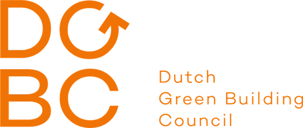

Framework for
Climate Adaptive Buildings
Open, transparante methodiek voor het vaststellen van fysieke klimaatrisico's op gebouwniveau, volledig gebaseerd op vrij beschikbare, landelijk dekkende open data.

Stichting Dutch Green Building Council
www.dgbc.nl
Introductie
Een duurzame gebouwde omgeving is voorbereid op een veranderend klimaat. De gevolgen zijn nu al merkbaar - wateroverlast door hoosbuien, verzakkingen door droogte, schade door hitte en overstroming. FCAB brengt dat fysieke klimaatrisico voor bestaande gebouwen in kaart.
1Klimaatverandering en gebouwen
Klimaatverandering is een systeemrisico. Wetenschappers schatten in dat de wereldeconomie bij een temperatuurstijging van 4 graden Celsius met een kwart kan krimpen - een bedrag dat de schade van de financiële crisis van 2007-2008 overstijgt. Voor Nederland is de totale klimaatgerelateerde financiële schade tot 2050 geraamd op 77,5 tot 173 miljard euro.
De fysieke gevolgen van klimaatverandering - overstromingen, stormen, droogte - kunnen gebouwen beschadigen of hun waarde verminderen. Risico's kunnen acuut zijn (een overstroming, hittegolf of bosbrand) of chronisch (langdurige hittestress, droogte, zeespiegelstijging). Daarnaast speelt transitierisico: de kosten van de overgang naar een klimaatneutrale economie, zoals de labelC-verplichting voor kantoren.
In Nederland leidden de overstromingen in Limburg (zomer 2021) tot een geschatte schade van 350-600 miljoen euro - meer dan tijdens de overstromingen van 1993 en 1995. In Nederland staan tussen de 750.000 en 1.000.000 panden met een houten paalfundering of fundering op staal; de verwachte schade aan deze panden door paalrot, lage grondwaterstanden en droogte kan tot 2050 oplopen tot 60 miljard euro.
2Rapportageverplichtingen over fysiek klimaatrisico
Steeds meer bedrijven rapporteren over klimaatgerelateerde risico's, mede door Europese regelgeving zoals de Sustainable Finance Disclosure Regulation (SFDR, 2019) en de Corporate Sustainability Reporting Directive (CSRD, 2021).
Task Force on Climate-Related Financial Disclosures (TCFD)
De TCFD, opgericht door de Financial Stability Board, doet aanbevelingen over het rapporteren van klimaatrisico's en -kansen langs vier pijlers: governance, strategie, risicomanagement, en indicatoren & doelstellingen.
EU Taxonomie
De EU Taxonomie is een Europees classificatiesysteem dat bepaalt wanneer een economische activiteit als klimaatadaptief kan worden bestempeld. Voor de bouw- en vastgoedsector zijn secties 7.1 (nieuwbouw), 7.2 (renovatie) en 7.7 (verwerving en eigendom) relevant. De Do No Significant Harm (DNSH)-criteria voor klimaatadaptatie bestaan uit drie stappen: (1) het uitvoeren van een klimaatrisicobeoordeling, (2) het toepassen van fysieke en niet-fysieke adaptatiemaatregelen, en (3) het opstellen van een adaptatieplan.
| Kader | Relevantie voor FCAB |
|---|---|
EU Taxonomie §7.2 & 7.7 | Klimaatrisicobeoordeling - stap 1 van de DNSH-criteria |
CSRD / SFDR | Transparante basis voor rapportage over fysieke klimaatrisico's |
TCFD | Risicomanagement en indicatoren & doelstellingen op gebouwniveau |
DPRA | Thema-indeling sluit aan op de vier DPRA-thema's |
3Bepalen klimaatrisico's
Traditioneel wordt risico benaderd als 'kans maal gevolg'. Het IPCC (zesde evaluatierapport, AR6) hanteert een breder risicobegrip: risico ontstaat door de interactie tussen drie dimensies.
Om tot een eenduidige aanpak te komen maakt FCAB onderscheid tussen twee scores die samen het fysieke klimaatrisico van een gebouw bepalen:
Veel klimaatrisico-analyses richten zich uitsluitend op de klimaatdreiging (hazard), terwijl blootstelling en kwetsbaarheid minstens zo belangrijk zijn. Door de omgevingsscore en gebouwscore te combineren ontstaat de klimaatrisicoscore per klimaatthema - uitgewerkt onder Gebouwscore.
4Klimaatmodellen
Klimaatmodellen simuleren hoe energie en materie op elkaar inwerken in atmosfeer, oceanen, landoppervlak, biosfeer en cryosfeer. Klimaatwetenschappers gebruiken mondiale klimaatmodellen (General Circulation Models, GCM's) en regionale klimaatmodellen (Regional Climate Models, RCM's). Het IPCC gebruikt meer dan 30 GCM's, vergeleken binnen het Coupled Model Intercomparison Project (CMIP).
Het KNMI vertaalt de mondiale CMIP-modellen naar fijnmazige modellen voor Nederland. Het vijfde IPCC-assessmentrapport (AR5, 2013) is gebaseerd op CMIP5-modellen; het zesde en meest recente rapport (AR6) op CMIP6.
5Klimaatscenario's
Klimaatscenario's zijn geen voorspellingen, maar aannemelijke en samenhangende voorstellingen van het toekomstige klimaat. Het KNMI gebruikt hiervoor de KNMI'14-klimaatscenario's, gebaseerd op AR5/CMIP5. Er zijn vier scenario's, ingedeeld naar temperatuurstijging (Gematigd/Warm) en verandering in luchtstromingspatroon (Hoge/Lage waarde):
- WH - sterke temperatuurstijging, hoge waarde verandering luchtstromen
- WL - sterke temperatuurstijging, lage waarde verandering luchtstromen
- GH - gematigde temperatuurstijging, hoge waarde verandering luchtstromen
- GL - gematigde temperatuurstijging, lage waarde verandering luchtstromen
FCAB gaat uit van het hoge klimaatscenario (WH), dat voor de meeste klimaateffecten het worst-case scenario vertegenwoordigt en overeenkomt met het bereik van het RCP 8.5-scenario van het IPCC. Medio 2023 zijn de nieuwe KNMI'23-klimaatscenario's verschenen, gebaseerd op AR6/CMIP6; integratie hiervan staat op de kennisagenda.
6Tijdshorizons
Klimaatscenario's hebben doorgaans een tijdshorizon van 50 tot 100 jaar - veel langer dan een weersverwachting (tot 15 dagen). Het IPCC hanteert twintig jaar als minimumperiode om relevante statistieken op te stellen; de KNMI-klimaatscenario's geven reeksen van dertig jaar en tonen veranderingen rond 2050 en 2085 ten opzichte van de periode 1981-2010.
Voor het inschatten van fysiek klimaatrisico is het zinvol ver vooruit te kijken, zeker gezien de levensduur van gebouwen (voor woningen en utiliteitsgebouwen doorgaans 50 tot 75 jaar). FCAB hanteert daarom het hoge klimaatscenario voor de periode tot 2050 - mede omdat niet alle kaartlagen tijdshorizons voorbij 2050 beschikbaar zijn.
Veelgestelde vragen
Veelgestelde vragen over de toepassing en interpretatie van het FCAB-framework.
1Toepassing
Nee. FCAB is uitsluitend ontwikkeld voor bestaande gebouwen. Voor nieuwbouw verwijzen we naar de Landelijke Maatlat voor een groene, klimaatadaptieve gebouwde omgeving.
Omgevingsscore (FCAB-1) beschrijft de klimaateffecten in de omgeving op basis van open data. Gebouwscore (FCAB-2) beschrijft de kwetsbaarheid van het gebouw zelf. Samen vormen zij de klimaatrisicoscore.
Dat is niet aanbevolen. Een hoge score op wateroverlast laat zich niet uitmiddelen met een lage score op hittestress. Elke thema-score staat op zichzelf en vergt specifieke aandacht.
Dit wordt verkend voor v1.1 (voorjaar 2025) op basis van KNMI'23. In de maatregelentabel zijn al maatregelen voor storm en hagel opgenomen.
2Interpretatie
De kaart is gebaseerd op AHN2-data (2007-2012). Gebouwen gebouwd na 2012 vallen buiten de opnameperiode en krijgen de score 'Onbekend'.
Een 'rode vlag' is het startpunt voor verdere analyse: (1) Deep-dive met nauwkeurigere data of locatiebezoek, (2) impactanalyse, (3) risicohouding bepalen (Terminate / Treat / Transfer / Take), (4) maatregelen selecteren uit de FCAB-3 maatregelentabel.
Omgevingsscore
De omgevingsscore - door sommige vastgoedpartijen ook wel 'bruto-klimaatrisico' genoemd - beschrijft de klimaateffecten voor de directe omgeving van een gebouw. Ze is volledig gebaseerd op vrij toegankelijke landelijke open data uit de Klimaateffectatlas, en werkt met het hoge klimaatscenario (KNMI'14 WH, 2050). Acht kaartlagen, verdeeld over vier klimaatthema's, vormen samen de omgevingsscore.
Scores Hoog en Zeer hoog zijn rode vlaggen en geven aanleiding tot nader onderzoek. Volledige dataset-specificaties en versiebeheer per kaartlaag staan op de themapagina's (tabblad 'Omgevingsscore').
1Hittestress
Tijdens een tropische nacht blijft de luchttemperatuur boven 20 °C. Door het stedelijk hitte-eilandeffect (UHI) is het in de stad 's nachts vaak warmer dan in het omringende landelijk gebied, wat passieve nachtventilatie bemoeilijkt. De kaart geeft het verwachte aantal tropische nachten per jaar in 2050 (WH-scenario), en is gebaseerd op temperatuurmetingen uit Rotterdam, geëxtrapoleerd naar de rest van Nederland (bron: WENR, 2016, resolutie 100 × 100 m).
| Kaartwaarde | Omgevingsscore |
|---|---|
| > 3 weken tropische nachten | Hoog |
| 2-3 weken | Middel |
| < 2 weken | Laag |
| NoData | Geen |
2Natuurbrandgevoeligheid
Deze gevoeligheidskaart toont per gebied de kans op het ontstaan van een natuurbrand, opgebouwd uit gegevens over brandbaar materiaal en klimaat- en locatiespecifieke eigenschappen. De kaart beslaat natuur- en landbouwgebieden van heel Nederland (bron: WENR & Deltares, 2021, resolutie 250 × 250 m). Bij validatie werd 75% van de opgetreden branden (2017-2020) goed voorspeld op locaties die matig of hoog gevoelig werden getoond.
| Kaartwaarde | Omgevingsscore |
|---|---|
| 3 - Hoog gevoelig | Hoog |
| 2 - Middel gevoelig | Middel |
| 1 - Laag gevoelig | Geen |
| NoData | Geen |
3Paalrot
In Nederland staan naar schatting 750.000 tot 1.000.000 panden op een houten paalfundering, gevoelig voor droogte doordat de paalkop gaat rotten zodra een lage grondwaterstand er zuurstof bij laat. De risicokaart geeft een indicatie van het risico op paalrot op buurtniveau tot 2050, en is opgebouwd uit twee onderliggende kaarten (bron: Deltares, 2021, CBS-buurtniveau).
| Indexwaarde | Omgevingsscore |
|---|---|
| > 15 | Zeer hoog |
| > 6 - 15 | Hoog |
| > 3 - 6 | Middel |
| > 0,8 - 3 | Laag |
| > 0 - 0,8 | Zeer laag |
| bouwjaar > 1975 | N.v.t. |
4Verschilzetting
Panden die vóór 1975 zijn gebouwd op een ondiepe fundering ('op staal'), op een ondergrond met veen of klei, zijn gevoelig voor verschilzetting: scheefzakken door bodemdaling of krimp-zwelgedrag van kleibodems. De risicokaart geeft een indicatie van dit risico op buurtniveau tot 2050 (bron: Deltares, 2021, CBS-buurtniveau).
| Indexwaarde | Omgevingsscore |
|---|---|
| > 25 | Zeer hoog |
| > 10 - 25 | Hoog |
| > 5 - 10 | Middel |
| > 1 - 5 | Laag |
| > 0 - 1 | Zeer laag |
5Waterdiepte bij hevige bui
Deze kaartlaag toont de maximale waterdiepte voor stedelijk en buitengebied bij een extreme bui van 70 mm neerslag in twee uur - in het huidige klimaat gemiddeld eens per 100 jaar. Er is gerekend met een uniforme rioolbergings- en afvoercapaciteit van maximaal 20 mm/uur. Het onderliggende hoogtemodel (AHN2) is ingemeten tussen 2007 en 2012 (bron: Europese Richtlijn Overstromingsrisico's, 2018, modelresolutie 2 × 2 m).
| Waterdiepte | Omgevingsscore |
|---|---|
| > 30 cm | Zeer hoog |
| 20-30 cm | Hoog |
| 15-20 cm | Middel |
| 10-15 cm | Laag |
| ≤ 10 cm | Zeer laag |
| bouwjaar ≥ 2013 | Onbekend |
6Grondwateroverlast
Deze indexscore combineert drie kaarten: (1) de ontwikkeling van de kans op grondwateroverlast voor stedelijke functies tussen nu en 2050, (2) de gemiddelde hoogste grondwaterstand in de huidige situatie, en (3) bodemdaling door ophoging tussen 2020 en 2050 (bron: Deltares / Nationaal Water Model, 2017/2021, resolutie 250 × 250 m resp. 100 × 100 m).
| Indexscore (som 3 kaarten) | Omgevingsscore |
|---|---|
| 3 | Hoog |
| 2 | Middel |
| 1 | Laag |
| 0 | Geen |
7Maximale waterdieptekaart
Deze kaart - identiek aan de kaart op overstroomik.nl - toont waar overstromingen tot ongeveer eens in de honderdduizend jaar (of nog minder vaak) kunnen voorkomen, gebaseerd op individuele overstromingsscenario's uit de Landelijke Database Overstromingen (bron: ontwikkeld in opdracht van RWS, 2021, resolutie 100 × 100 m). De classificatie is gebaseerd op aannames voor vloerpeil en de wettelijke plafondhoogte uit het Bouwbesluit 2012.
| Waterdiepte | Omgevingsscore |
|---|---|
| > 2,6 m (plafondhoogte Bouwbesluit 2012) | Hoog |
| 1 - 2,6 m | Middel |
| 0,2 - 1 m | Laag |
| ≤ 0,2 m | Zeer laag |
| NoData | Geen |
8Plaatsgebonden overstromingskans
Deze kaart laat zien wat de kans is dat een locatie in 2050 volgens de norm te maken krijgt met een overstroming waarbij het water hoger komt dan 20 cm, vanuit het primaire én regionale watersysteem samen. De plaatsgebonden overstromingskansen zijn gebaseerd op de veiligheidseisen van de waterkeringen (bron: LIWO, 2021, resolutie binnendijks 100 × 100 m, buitendijks 10 × 10 m).
| Kans | Omgevingsscore |
|---|---|
| Grote kans: > 1/30 per jaar | Hoog |
| Middelgrote kans: 1/30 - 1/300 | Middel |
| Kleine kans: 1/300 - 1/3.000 | Laag |
| Zeer kleine kans: > 1/3.000 | Zeer laag |
| NoData | Geen |
Gebouwscore
Waar de omgevingsscore naar de omgeving kijkt, kijkt de gebouwscore naar het gebouw zelf: naar de gebouwspecifieke eigenschappen die het meest bepalend zijn voor de impact van een klimaatdreiging. Dit is het onderwerp van FCAB-2 (DGBC, juli 2023). Door de omgevingsscore en de gebouwscore te combineren ontstaat de klimaatrisicoscore per klimaatthema - ook wel het 'netto-klimaatrisico' genoemd.
1Hitte
De gebouwscore voor hitte telt punten op voor kenmerken die opwarming versterken (glasoppervlak, thermische massa, aanwezigheid van zonwering, zon-toetredingsfactor, dakkleur, gevelkleur, overstek boven ramen) en trekt punten af voor kenmerken die afkoeling bevorderen (koeling, isolatie, spuiventilatie). Bij hitte weegt de gebouwscore zwaarder dan de omgevingsscore in de uiteindelijke risicomatrix: goede isolatie, buitenzonwering en spuiventilatie kunnen een hoge omgevingsscore compenseren. Volledige puntentabellen staan op de Hitte-pagina, tabblad Gebouwscore.
2Droogte
Droogte werkt niet met een optelbare puntenscore per kenmerk, maar volgt direct uit bouwjaar en funderingstype. Panden gebouwd na 1975 zijn niet gevoelig voor paalrot of verschilzetting. Voor oudere panden op een houten paalfundering bepaalt het bouwjaar (leeftijd = cumulatieve blootstelling) de gebouwscore voor paalrot; voor panden op een ondiepe fundering ('op staal') volgt de gebouwscore voor verschilzetting uit een tabel van bouwjaar × onderkeldering (0-100). Is het funderingstype onbekend, dan geldt de categorie 'zeer hoge kwetsbaarheid'. Volledige tabellen staan op de Droogte-pagina, tabblad Gebouwscore.
3Wateroverlast
De gebouwscore voor wateroverlast telt punten op voor kenmerken die het gebouw kwetsbaar maken voor kortdurende hevige neerslag: de hoogte van de ingang ten opzichte van het maaiveld (dryproofing), de aanwezigheid van een parkeerkelder of andere ondergrondse ruimte, overige instroompunten (kelderramen), en het al dan niet aanwezig zijn van een ontlastput of terugslagklep tegen rioolwater (wetproofing). Volledige puntentabellen staan op de Wateroverlast-pagina, tabblad Gebouwscore.
4Overstroming
De gebouwscore voor overstroming werkt vergelijkbaar met wateroverlast, maar dan toegespitst op grotere waterdieptes (tot 50 cm en hoger): de hoogte van de ingang, parkeerkelders en andere ondergrondse ruimtes, overige instroompunten (kelderramen, open stootvoegen), en terugslagkleppen tegen rioolwater. Volledige puntentabellen staan op de Overstroming-pagina, tabblad Gebouwscore.
Klimaatrisicoscore
Uitzondering - Hitte: bij hitte weegt de gebouwscore zwaarder. Goede isolatie, buitenzonwering en spuiventilatie kunnen een hoge omgevingsscore compenseren.
Hitte
Door klimaatverandering stijgt de temperatuur en worden onze zomers warmer. Warmte-extremen zullen vaker voorkomen. Steden zijn meestal warmer dan een landelijke omgeving door het hitte-eilandeffect. Hitte versterkt de behoefte aan koeling. Dat kan met airconditioning en andere middelen, waarbij airconditioning kan leiden tot hogere energiekosten en emissies. Afhankelijk van het ontwerp van een gebouw kunnen hoge buitentemperaturen leiden tot hittestress bij de gebouwgebruikers of bewoners. Langdurig aanhoudende hitte kan leiden tot klachten als vermoeidheid, concentratieproblemen en hoofdpijn. Er bestaat ook risico op uitdroging en oververhitting. In het ergste geval kunnen mensen hieraan overlijden. Tijdens de hittegolf in juli 2019 overleden in één week bijna 400 mensen meer dan normaal. Door het hitte-eilandeffect zijn bewoners die dag en nacht in het gebied verblijven extra blootgesteld aan de warmte.
Om te komen tot een klimaatrisicoscore voor gebouwen is een integrale analyse van gebieds- en gebouwkenmerken noodzakelijk. Voorbeelden van gebiedskenmerken zijn bijvoorbeeld de mate van verharding, de straatinrichting en de aanwezigheid van water. Relevante gebouwkenmerken zijn bijvoorbeeld de oriëntatie van de ramen, de ligging van de kamers, en de mate van isolatie. Voor de uiteindelijke klimaatrisicoscore voor hitte zijn vooral de gebouwkenmerken belangrijk: de kwetsbaarheid van het gebouw bij hoge temperaturen. De hieronder beschreven omgevingsscore weegt in de uiteindelijke klimaatrisicoscore dus maar beperkt mee. Om te beoordelen wat prioriteitsgebouwen zijn binnen een portefeuille, is het vooral belangrijk om naar de gebouwspecifieke eigenschappen te kijken. Dit kan met de gebouwscore, de tweede stap van het Framework for Climate Adaptive Buildings.
Tijdens een tropische nacht blijft de luchttemperatuur boven 20 °C. Door het hitte-eilandeffect (UHI) is het in stedelijk gebied nachtelijk warmer dan in het omringende landelijke gebied, waardoor passieve nachtkoeling bemoeilijkt wordt.
De omgevingsscore voor hitte bepalen we aan de hand van de volgende kaartlaag: Hittestress door warme nachten - 2050 Hoog.
Tijdens een warme nacht blijft de luchttemperatuur boven de 20 graden Celsius. Als het buiten niet afkoelt tot onder de 20 graden Celsius is het moeilijker om het binnen aangenaam koel te houden. In de stad is het vaak warmer dan in het omringende landelijk gebied. Dit wordt het stadseffect of stedelijk hitte-eiland effect genoemd. Dit effect is 's nachts het sterkst aanwezig, de warmte blijft dan tussen de gebouwen hangen. Deze kaart maakt specifieke aandachtsgebieden zichtbaar, maar of er uiteindelijk hittestress optreedt, is vooral afhankelijk van de kwetsbaarheid van het gebouw.
De hittekaart gevoelstemperatuur, ook wel PET-kaart genoemd, is ook relevant voor het inschatten van een klimaatrisicoscore voor gebouwen. Deze kaart laat de lokale gevoelstemperatuur zien op een extreem hete zomermiddag. De PET-kaart is gebruikt voor het inschatten van de gebouwscore, maar is voor de omgevingsscore minder geschikt. Op termijn werken wij toe naar een meer geschikte kaart om koele plekken in de directe omgeving van het gebouw te identificeren, en daarmee de omgevingsscore verder te verbeteren.
Hittestress door warme nachten - 2050 Hoog
Bij warme nachten is er kans op hittestress. Deze kaart geeft een indicatie van het aantal tropische nachten voor het WH-scenario in 2050. Het WH-scenario kent het grootste aantal tropische nachten van de vier KNMI'14-scenario's. Bij tropische nachten komt de temperatuur niet onder de 20 graden Celsius. Dit wordt in het algemeen beschouwd als een indicator voor gezondheidsrisico's. In de modellering is het stadseffect meegenomen. Bij de ontwikkeling van de kaart zijn temperatuurmetingen uit Rotterdam gerelateerd aan omgevingskenmerken en geëxtrapoleerd naar de rest van Nederland. Daarmee geeft de kaart vooral een indicatie van de hete nachten in stedelijk gebied.
Dataset specificaties
| Eigenschap | Waarde |
|---|---|
| Bron | WENR (Wageningen Environmental Research) |
| Publicatiejaar | 2016 |
| Resolutie | 100m × 100m |
| Scenario | KNMI'14 WH (2050) |
| Methode | Temperatuurmetingen Rotterdam → omgevingskenmerken → extrapolatie Nederland |
| Beperkingen | Indicatief voor stedelijk gebied; herziening gewenst |
De omgevingsscore voor hitte is een signaleringsinstrument. Of daadwerkelijk hittestress optreedt is sterk afhankelijk van de gebouwkenmerken - bij hitte zijn die leidend voor de klimaatrisicoscore.
Classificatie omgevingsscore
| Kaartwaarde | Omgevingsscore |
|---|---|
> 21 tropische nachten | Hoog |
14-21 tropische nachten | Middel |
< 14 tropische nachten | Laag |
NoData | Geen |
Opmerkingen
Bovenstaande tabel geeft een voorstel voor een classificatie van de omgevingsscore voor hitte. Het is lastig om goed te onderbouwen waar de scheidslijn tussen laag, middel en hoog precies moet liggen. Voorlopig hanteren we (op basis van expert judgement) de grenswaarden zoals in de tabel, maar vanuit lopend onderzoek kan deze indeling in de toekomst mogelijk verder worden gespecificeerd. Op basis van een adrespunt kan de specifieke waarde voor het aantal hete nachten of de omgevingsscore op die locatie worden bepaald. Deze waarde kan aanleiding geven om het effect verder te onderzoeken voor specifieke aandachtsgebieden. Of er uiteindelijk hittestress optreedt is afhankelijk van de lokale kwetsbaarheid. Gebieden met veel sterk geïsoleerde nieuwbouwwoningen en waar veel ouderen wonen zijn bijvoorbeeld kwetsbaarder.
Berekening omgevingsscore hittestress
De omgevingsscore hittestress is in het Framework for Climate Adaptive Buildings deel 1 gebaseerd op het aantal warme nachten in 2050 (KNMI'14 WH-scenario). Dit is ingedeeld in vier klassen (geen, laag, middel en hoog risico). Tijdens deze warme nachten komt de temperatuur niet onder de 20°C. Voor de methodiek en bijbehorende omgevingsscoreclasses: zie het tabblad Omgevingsscore (FCAB-1).
Berekening gebouwscore hittestress
Optie 1: TOjuli of GTO-uren bekend. Indien er een TOjuli-berekening of een GTO-urenberekening beschikbaar is, kan de kwetsbaarheid van een gebouw voor hittestress hier direct van worden afgeleid. Onderstaand kader laat zien welke kwalitatieve klimaatrisicoscore hoort bij de maximale richtgetallen voor TOjuli en GTO-uren.
| Zeer laag | Laag | |
|---|---|---|
| TOjuli | ≤ 0,6 | 0,6 - 1,2 |
| GTO | ≤ 225 | 225 - 450 |
Optie 2: TOjuli of GTO-uren niet bekend. Voor veel gebouwen zijn de TOjuli- of GTO-uren niet beschikbaar. Voor deze gebouwen drukken we de kwetsbaarheid van een gebouw uit in een gebouwscore die wordt gebaseerd op een lijst gebouwkenmerken. Dit is een lijst waarin de gebouwkenmerken zijn geselecteerd die het meest bijdragen aan de kwetsbaarheid van een gebouw voor hittestress.
Punten volgens Tabel 3 (opwarming) en Tabel 4 (afkoeling), FCAB Deel 2 - De gebouwscore. Klik per vraag op het van toepassing zijnde antwoord; de tabellen tellen de punten automatisch op. Bij onbekende data wordt de categorie 'zeer hoge kwetsbaarheid' toegekend.
Opwarming
Afkoeling
Bij hitte weegt de gebouwscore zwaarder dan de omgevingsscore: de klimaatrisicoscore volgt rechtstreeks uit de gebouwscore-totaalpunten op het tabblad Gebouwscore. Een gebouw met buitenzonwering, spuiventilatie en goede isolatie kan een lage klimaatrisicoscore halen, ook bij een hoge omgevingsscore.
Klimaatrisicoscore Hitte
Kies hieronder de omgevingsscore om, samen met de gebouwscore van het tabblad Gebouwscore, de klimaatrisicoscore te zien.
Bij hitte ligt de nadruk op het temperen van opwarming en het bevorderen van nachtelijke afkoeling: buitenzonwering, reflecterende dak- en gevelkleuren en voldoende spuiventilatie zijn vaak kosteneffectieve eerste stappen. Op gebiedsniveau dragen groen en schaduw bij aan het verminderen van het stedelijk hitte-eilandeffect. Voor kwetsbare gebouwgebruikers (ouderen, mensen in sociaal isolement) is een hitteprotocol met tijdelijke zorg of een koele verblijfplek een belangrijke niet-fysieke aanvulling. Zie Adaptatiestrategie (FCAB-3) voor de volledige methodiek.
Publicatie van het derde deel met risicomanagementcyclus, maatregelentabel (115+ maatregelen) en kennisagenda.
nieuw FCAB-3 Maatregelentabel (115 maatregelen)nieuw Storm en hagel in maatregelentabel
update Afstemming EU Taxonomie §7.7
nieuw Gebouwscore methodiek
nieuw Klimaatrisicoscore (omgeving × gebouw)
nieuw Red-flagging procedure
nieuw Omgevingsscore methodiek (4 klimaatthema's)
nieuw 8 kaartlagen met classificatietabellen
nieuw Aansluiting EU Taxonomie & TCFD
Integratie KNMI'23-klimaatscenario's · Actualisatie wateroverlastkaart (AHN4) · Verbeterde nachtelijke hittekaart · Verkenning Hagel & Storm als volwaardig thema
Droogte
Droogte raakt de gebouwde omgeving via drie afzonderlijke fysieke mechanismen: natuurbrandgevoeligheid, paalrot bij houten funderingen en verschilzetting bij ondiepe fundering op staal.
Natuurbrandgevoeligheid 2050 Hoog
Gevoeligheidskaart op basis van brandbaar materiaal, klimaatspecifieke en locatiespecifieke eigenschappen. Bestrijkt natuur- én landbouwgebieden.
Risico Paalrot 2050 Hoog
750.000-1.000.000 panden gefundeerd op houten palen. Bij droogte daalt het grondwaterpeil → zuurstof bij paalkop → paalrot. Herstelkosten tot €120.000 per pand.
Risico Verschilzetting 2050 Hoog
Panden op ondiepe fundering ('op staal') op veen/klei zijn gevoelig voor ongelijkmatige bodemdaling bij droogte, wat leidt tot scheurvorming.
Dataset
| Eigenschap | Waarde |
|---|---|
| Bron | WENR & Deltares |
| Jaar | 2021 |
| Resolutie | 250m × 250m |
| Validatie | 75% van branden (2017-2020) correct voorspeld |
Signaleringskaart. 25% van de branden viel buiten 'matig/hoog gevoelig' - ook lager geclassificeerde locaties verdienen aandacht.
Scoring
| Kaartwaarde | Omgevingsscore |
|---|---|
3 - Hoog gevoelig | Hoog |
2 - Middel gevoelig | Middel |
1 - Laag gevoelig | Geen |
NoData | Geen |
Dataset
| Eigenschap | Waarde |
|---|---|
| Bron | Deltares |
| Jaar | 2021 |
| Resolutie | Buurtniveau - CBS Wijk- en Buurtenkaart 2020 |
Signaleringskaart op buurtniveau. Bij hoog/zeer hoog risico: lokaal funderingsonderzoek vereist.
Scoring
| Indexwaarde | Omgevingsscore |
|---|---|
> 15 | Zeer hoog |
> 6 - 15 | Hoog |
> 3 - 6 | Middel |
> 0,8 - 3 | Laag |
> 0 - 0,8 | Zeer laag |
bouwjaar > 1975 | N/A |
Dataset
| Eigenschap | Waarde |
|---|---|
| Bron | Deltares |
| Jaar | 2021 |
| Resolutie | CBS Wijk- en Buurtenkaart 2020 |
| Beperkingen | Zuid-Limburg niet meegenomen; hogere onzekerheid rivierengebied |
Alleen relevant voor panden vóór 1975. Krimp-zwel gedrag van kleibodems niet meegenomen.
Scoring
| Indexwaarde | Omgevingsscore |
|---|---|
> 25 | Zeer hoog |
> 10 - 25 | Hoog |
> 5 - 10 | Middel |
> 1 - 5 | Laag |
> 0 - 1 | Zeer laag |
Droogte werkt niet met een optelbare puntenscore per kenmerk zoals de andere thema's - de gebouwscore volgt direct uit bouwjaar en funderingstype (FCAB Deel 2, §4.2.2).
Bouwjaar
Funderingstype (alleen bij bouwjaar < 1975)
Staal fundering - Tabel 13: gebouwscore naar bouwjaar × onderkeldering
| Bouwjaar | Volledig souterrain | Gedeeltelijke kelder | Geen kelder |
|---|---|---|---|
| < 1900 | 50 | 100 | 75 |
| 1900-1920 | 25 | 75 | 50 |
| > 1920 | 0 | 50 | 25 |
Bodemtype directe omgeving
Bepaalt de omgevingsscore (blootstellingsklasse × bodemtype, Tabel 9), niet de gebouwscore.
Klimaatrisicoscore droogte is 'niet van toepassing' voor panden na 1975 voor paalrot en verschilzetting. Voor houten paalfunderingen volgt de klimaatrisicoscore direct uit bouwjaar en omgevingsscore (Tabel 12); voor fundering op staal uit de gebouwscore op het tabblad Gebouwscore (Tabel 13) gecombineerd met de omgevingsscore.
Tabel 12 - Houten paalfundering: klimaatrisicoscore naar omgevingsscore × bouwjaar
Fundering op staal: klimaatrisicoscore naar omgevingsscore × gebouwscore
Interactieve check - bereken je klimaatrisicoscore Droogte
Het funderingstype bepaalt welke vervolgvragen nodig zijn. Voor houten palen en fundering op staal vul je ook de omgevingsscore van de GIS-kaart funderingschade in.
Bij droogte richt de adaptatiestrategie zich vooral op het monitoren en beperken van funderingsschade: periodieke inspectie van houten paalfunderingen en waterdoorlatende in plaats van verharde bestrating rond het gebouw verminderen uitdroging van de ondergrond. Op gebiedsniveau helpt het vasthouden van water (infiltratie, groen) om grondwaterstanden op peil te houden. Bij een hoog risico op paalrot of verschilzetting is een deep-dive met lokaal funderingsonderzoek aan te raden voordat grootschalige maatregelen worden overwogen. Zie Adaptatiestrategie (FCAB-3) voor de volledige methodiek.
Publicatie van het derde deel met risicomanagementcyclus, maatregelentabel (115+ maatregelen) en kennisagenda.
nieuw FCAB-3 Maatregelentabel (115 maatregelen)nieuw Storm en hagel in maatregelentabel
update Afstemming EU Taxonomie §7.7
nieuw Gebouwscore methodiek
nieuw Klimaatrisicoscore (omgeving × gebouw)
nieuw Red-flagging procedure
nieuw Omgevingsscore methodiek (4 klimaatthema's)
nieuw 8 kaartlagen met classificatietabellen
nieuw Aansluiting EU Taxonomie & TCFD
Integratie KNMI'23-klimaatscenario's · Actualisatie wateroverlastkaart (AHN4) · Verbeterde nachtelijke hittekaart · Verkenning Hagel & Storm als volwaardig thema
Wateroverlast
Waterdiepte hevige bui 70 mm / 2 uur (1:100 jaar)
Maximale waterdiepte bij een extreme bui van 70 mm in 2 uur. Huidig klimaat: gemiddeld 1× per 100 jaar. Door klimaatverandering verdubbelt de kans aan het einde van de eeuw.
Grondwateroverlast (index uit 3 kaarten)
- Ontwikkeling kans grondwateroverlast 2050 Hoog
- Gemiddelde Hoogste Grondwaterstand Huidig
- Bodemdaling door ophoging 2020-2050
Dataset
| Eigenschap | Waarde |
|---|---|
| Bron | Europese Richtlijn Overstromingsrisico's (ROR), Deltares / Tygron |
| Jaar | 2018 |
| Modelresolutie | 2m × 2m |
| Hoogtemodel | AHN2 (2007-2012) |
| Beperkingen | Gebouwen na 2012 → score 'Onbekend' |
BAG-voetafdruk + 2 m buffer. Klimaatverandering niet meegenomen in bui-intensiteit.
Scoring
| Waterdiepte | Omgevingsscore |
|---|---|
> 30 cm | Zeer hoog |
20-30 cm | Hoog |
15-20 cm | Middel |
10-15 cm | Laag |
≤ 10 cm | Zeer laag |
bouwjaar ≥ 2013 | Onbekend |
Dataset
| Kaartlaag | Bron | Jaar | Res. |
|---|---|---|---|
| Kans GW-overlast 2050 | Deltares / NWM | 2017 | 250m |
| GHG Huidig | Deltares / NWM | 2017 | 250m |
| Bodemdaling ophoging | Deltares | 2021 | 100m |
Geschikt op wijk/polderniveau en hoger. Op straatniveau beperkte betrouwbaarheid. Lokale drainage niet meegenomen.
Scoring
| Indexscore (som 3 kaarten) | Omgevingsscore |
|---|---|
3 | Hoog |
2 | Middel |
1 | Laag |
0 | Geen |
Punten volgens Tabel 15, FCAB Deel 2 - De gebouwscore. Klik per vraag op het van toepassing zijnde antwoord; de tabel telt de punten automatisch op tot de gebouwscore. Bij onbekende data wordt de categorie 'zeer hoge kwetsbaarheid' toegekend.
De klimaatrisicoscore voor wateroverlast volgt uit de gebouwscore (0-100 punten) in combinatie met de omgevingsscore (waterdiepte bij hevige bui): bij eenzelfde gebouwscore leidt een hogere omgevingsscore eerder tot een hogere klimaatrisicoscore.
Klimaatrisicoscore Wateroverlast
Kies hieronder de omgevingsscore om, samen met de gebouwscore van het tabblad Gebouwscore, de klimaatrisicoscore te zien.
Bij wateroverlast is de volgorde niet-fysiek → gebied → gebouw extra relevant: een piekbui is op gebouwniveau vaak niet volledig op te vangen, waardoor gebiedsmaatregelen zoals waterberging, infiltratie en groene daken doorgaans het meeste effect hebben. Op gebouwniveau verminderen drempels, terugslagkleppen en het verhogen van instroompunten (kelderramen, ventilatieopeningen) de kans op waterschade. Een actueel hemelwaterplan en heldere afspraken met de gemeente over de rioolcapaciteit zijn een belangrijke niet-fysieke aanvulling. Zie Adaptatiestrategie (FCAB-3) voor de volledige methodiek.
Met de nieuwe klimaatscenario's wordt een bui van 70 mm in 1 uur een gebeurtenis die eens in de 100 jaar valt (mogelijke herhalingstijd bij sterke klimaatverandering) - de opvolger van de huidige 70 mm / 2 uur kaart.
nieuw Dataset: bron Klimaateffectatlas, jaar 2026, modelresolutie0,5 × 0,5 m, hoogtemodel AHN 4, 5 en 6update Methode: buffer rond het gebouw verkleind naar
0,5 m (was 2 m) - de methode kijkt alleen nog naar de directe omgeving van het gebouwupdate Methode: uitgegaan van de waterdiepte die door
99% van de rastercellen niet wordt overschreden, in plaats van de maximale waterdiepte - dit geeft een realistischer beeld en is minder gevoelig voor uitschietersupdate Methode: waterdiepte van
0-2 cm wordt weggegumd (geen directe schade; ten behoeve van het kaartbeeld)update Scoring herzien op basis van een combinatie van damage curve (WSS), Bbl (art. 4.182) en kritieke uitvalhoogtes (rapport NKWK):
> 30 cm zeer hoog · 20-30 cm hoog · 15-20 cm middel · 10-15 cm laag · 2-10 cm zeer laag · < 2 cm / 0 cm geen · geen data (bijv. brondata ouder dan gebouw) onbekendupdate De beperking 'gebouwen na 2012 → score Onbekend' komt hierdoor te vervallen
Publicatie van het derde deel met risicomanagementcyclus, maatregelentabel (115+ maatregelen) en kennisagenda.
nieuw FCAB-3 Maatregelentabel (115 maatregelen)nieuw Storm en hagel in maatregelentabel
update Afstemming EU Taxonomie §7.7
nieuw Gebouwscore methodiek
nieuw Klimaatrisicoscore (omgeving × gebouw)
nieuw Red-flagging procedure
nieuw Omgevingsscore methodiek (4 klimaatthema's)
nieuw 8 kaartlagen met classificatietabellen
nieuw Aansluiting EU Taxonomie & TCFD
Integratie KNMI'23-klimaatscenario's · Actualisatie wateroverlastkaart (AHN4) · Verbeterde nachtelijke hittekaart · Verkenning Hagel & Storm als volwaardig thema
Overstroming
Maximale waterdieptekaart (overstroomik.nl, 2021)
Toont waar overstromingen tot ca. 1:100.000 jaar kunnen voorkomen. Gebaseerd op de Landelijke Database Overstromingen (LDO) en het LIWO-systeem.
Plaatsgebonden overstromingskans 2050 (≥ 20 cm)
Kans op overstroming ≥ 20 cm in 2050, gebaseerd op veiligheidseisen van waterkeringen (Waterwet) en provinciale norm voor regionale keringen.
Dataset
| Eigenschap | Waarde |
|---|---|
| Bron | Rijkswaterstaat / LIWO |
| Jaar | 2021 |
| Resolutie | 100m × 100m |
Classificatie gebaseerd op plafondhoogte Bouwbesluit 2012 (2,6 m). Scenario's in de kaart treden in werkelijkheid niet allemaal tegelijkertijd op.
Scoring
| Waterdiepte | Omgevingsscore |
|---|---|
> 2,6 m (plafondhoogte Bouwbesluit 2012) | Hoog |
1 - 2,6 m | Middel |
0,2 - 1 m | Laag |
≤ 0,2 m | Zeer laag |
NoData | Geen |
Dataset
| Eigenschap | Waarde |
|---|---|
| Bron | LIWO |
| Jaar | 2021 |
| Resolutie | Binnendijks 100m; buitendijks 10m |
Conservatieve schattingen. Geschikt voor eerste signalering, minder voor investeringsbeslissingen.
Scoring
| Kans | Omgevingsscore |
|---|---|
Grote kans: > 1/30 per jaar | Hoog |
Middelgrote kans: 1/30 - 1/300 | Middel |
Kleine kans: 1/300 - 1/3.000 | Laag |
Zeer kleine kans: > 1/3.000 | Zeer laag |
NoData | Geen |
Punten volgens Tabel 20, FCAB Deel 2 - De gebouwscore. Klik per vraag op het van toepassing zijnde antwoord; de tabel telt de punten automatisch op tot de gebouwscore. Bij onbekende data wordt de categorie 'zeer hoge kwetsbaarheid' toegekend. Deze vragen zijn alleen relevant wanneer de plaatsgebonden overstromingskans bij de omgevingsscore op "Gemiddelde kwetsbaarheid" uitkomt - ze verschijnen daarom op het tabblad Klimaatrisicoscore, samen met de rest van de interactieve berekening.
Bij overstroming bepaalt eerst de omgevingsscore of de gebouwscore überhaupt meetelt: bij een kleine kans altijd een lage klimaatrisicoscore, bij een grote kans op > 50 cm altijd een hoge klimaatrisicoscore. Alleen in het middengebied bepaalt de gebouwscore het resultaat.
Klimaatrisicoscore Overstroming
Vul eerst de omgevingsscore in; de gebouwvragen verschijnen zodra ze relevant zijn.
Bij overstroming bepaalt de kanscategorie welke maatregelen zinvol zijn: bij een kleine kans is alertheid (early warning, een noodplan) vaak voldoende, terwijl bij een grotere kans fysieke maatregelen zoals waterkerende voorzieningen bij de gevel, het verhoogd plaatsen van vitale installaties en het beperken van instroompunten in de kelder de klimaatrisicoscore het meest verlagen. Gebiedsbrede oplossingen (waterkeringen, compartimentering) liggen doorgaans buiten de invloedssfeer van een individuele gebouweigenaar, maar zijn wel relevant om in de gaten te houden via de risicodialoog met de gemeente en het waterschap. Zie Adaptatiestrategie (FCAB-3) voor de volledige methodiek.
Publicatie van het derde deel met risicomanagementcyclus, maatregelentabel (115+ maatregelen) en kennisagenda.
nieuw FCAB-3 Maatregelentabel (115 maatregelen)nieuw Storm en hagel in maatregelentabel
update Afstemming EU Taxonomie §7.7
nieuw Gebouwscore methodiek
nieuw Klimaatrisicoscore (omgeving × gebouw)
nieuw Red-flagging procedure
nieuw Omgevingsscore methodiek (4 klimaatthema's)
nieuw 8 kaartlagen met classificatietabellen
nieuw Aansluiting EU Taxonomie & TCFD
Integratie KNMI'23-klimaatscenario's · Actualisatie wateroverlastkaart (AHN4) · Verbeterde nachtelijke hittekaart · Verkenning Hagel & Storm als volwaardig thema
Hagel & Storm
- Hagel: Hagelstenen worden naar verwachting groter.
- Wind: Hevigere zomerbuien gaan gepaard met zwaardere windstoten.
Nog niet beschikbaar - wordt verkend op basis van de KNMI'23-klimaatscenario's.
Nog niet beschikbaar - wordt verkend op basis van de KNMI'23-klimaatscenario's.
Nog niet beschikbaar - volgt zodra omgevings- en gebouwscore zijn uitgewerkt.
Hagel & Storm wordt nog niet als volwaardig klimaatthema met een eigen omgevings- en gebouwscore gevoerd, maar in de FCAB-3 Maatregelentabel zijn al maatregelen opgenomen die hagel- en stormschade beperken: onder meer hagelbestendige dakbedekking en beglazing, het vastzetten of verwijderen van losse buitenelementen (zonwering, dakpannen) en periodieke inspectie na extreme weersomstandigheden. Zie Adaptatiestrategie (FCAB-3) voor de volledige methodiek.
Publicatie van het derde deel met risicomanagementcyclus, maatregelentabel (115+ maatregelen) en kennisagenda.
nieuw Storm en hagel in maatregelentabelVerkenning Hagel & Storm als volwaardig thema, inclusief eigen omgevings- en gebouwscore.
Adaptatiestrategie
FCAB Deel 3 - van geconstateerd klimaatrisico naar een concreet handelingsperspectief: risicomanagement, impactanalyse, risicohouding en ruim 100 adaptatiemaatregelen op gebieds- en gebouwniveau.
1Naar een climate proof gebouwde omgeving
Meten, weten, doen. Bij het verduurzamen van de gebouwde omgeving zijn deze drie stappen telkens weer belangrijk. Uiteindelijk is het 'doen' de belangrijkste stap: actie in de richting van een duurzamere gebouwde omgeving. In FCAB-1 en FCAB-2 stonden het meten en weten centraal: de fysieke klimaatrisico's op gebouwniveau werden in kaart gebracht. Dit derde deel gaat in op het 'doen'.
Met climate proof bedoelen we: bestand tegen de gevolgen van het veranderend klimaat. In hoeverre aanpassing (klimaatadaptatie) nodig is, wordt voor een belangrijk deel bepaald door de vorderingen op het vlak van klimaatmitigatie. Onzekerheden in klimaatscenario's en -beleid maken dat er regelmatig moet worden heroverwogen of risico-inschattingen nog kloppen, of aanpassing van adaptatieplannen nodig is.
Een belangrijk ingrediënt van dit deel is de FCAB Maatregelentabel (bijlage 1): ruim honderd fysieke maatregelen op gebieds- en gebouwniveau, aangevuld met enkele niet-fysieke maatregelen. Of een maatregel 'goed genoeg' is om een klimaatrisico weg te nemen is in algemene zin moeilijk te zeggen - de kennis over kwantitatieve effecten van maatregelen is nog beperkt, mede omdat dezelfde maatregel op veel verschillende manieren geïmplementeerd kan worden. Daarom legt deze versie van de methodiek nog geen directe relatie tussen een genomen maatregel en een verbeterde klimaatrisicoscore (zie ook §6 Kwantificering).
2Klimaatrisico's in een risicomanagementcyclus
Risicomanagement is voor vastgoedpartijen, woningcorporaties en overheden geen onbekend fenomeen. Het expliciet meenemen van de impact van klimaatverandering op een gebouwenportfolio is voor veel partijen wel nieuw. De structuur van FCAB-3 volgt grotendeels de stappen van een risicomanagementcyclus.
- Organisatiedoelen en risicobereidheid - Een organisatie heeft een strategie en doelen, idealiter ook met betrekking tot klimaatadaptatie. Hieruit volgt een opvatting over de mate waarin risico's acceptabel zijn (de 'risk appetite'), waarbij naast risico-rendement ook een bredere maatschappelijke afweging een rol speelt (ESG-reporting).
- Fysieke klimaatrisico's identificeren - FCAB-1 en FCAB-2 identificeren de fysieke klimaatrisico's op gebouwniveau binnen een portefeuille, wat houvast biedt bij het prioriteren van maatregelen.
- Fysieke klimaatrisico's beoordelen - Interpreteren, duiden en beoordelen van de gevonden klimaatrisicoscore via drie deelstappen: de optionele deep-dive, een impactanalyse en het bepalen van een risicohouding (zie §3 hieronder).
- Maatregelen kiezen - Drie typen maatregelen in een vaste volgorde: eerst niet-fysieke maatregelen, dan fysieke maatregelen op gebiedsniveau, en tot slot fysieke maatregelen op gebouwniveau (zie §4).
- Maatregelen plannen, uitvoeren, borgen en monitoren - De planning wordt mede gestuurd door prioriteiten uit de impactanalyse. Zoek naar 'natuurlijke momenten', bijvoorbeeld door te koppelen aan bestaande meerjarenonderhoudsplanningen (MJOP's) of geplande gemeentelijke ingrepen in de openbare ruimte.
- Rapporteren - Europese rapportageverplichtingen (CSRD, SFDR, EU Taxonomie) zijn een belangrijke stimulans om met klimaatrisico's aan de slag te gaan. Ook financiers van woningcorporaties brengen fysieke klimaatrisico's steeds beter in beeld.
- Evalueren - Evalueer periodiek de risicomanagementcyclus en de effectiviteit van genomen maatregelen. Pas de cyclus aan op basis van nieuwe informatie, gewijzigde risico's of veranderende omstandigheden.
3Fysieke klimaatrisico's beoordelen
In FCAB-2 wordt aanbevolen om voor panden die met een hoog risico uit de analyse komen ('rode vlaggen') een deep-dive uit te voeren. De EU-technical guidance spreekt daarnaast over de noodzaak van een impactanalyse als vervolgstap op de risicobeoordeling. Beide zijn manieren om het risk assessment op gebouwniveau in een bredere context te interpreteren. Uiteindelijk leiden deze stappen tot een beslissing over de risicohouding: hoe een organisatie wil omgaan met de geconstateerde risico's.
3.1 Deep-dive
Een deep-dive heeft twee hoofddoelen: het toetsen van de gebruikte informatie aan de werkelijkheid van het gebouw, en nader inzicht verkrijgen over de meest passende maatregelen. De deep-dive is vormvrij; twee aandachtspunten liggen voor de hand:
- Gebruik van exactere databronnen en modellen - Landelijke open data (FCAB-1) is zeer toegankelijk maar soms niet actueel of gedetailleerd genoeg. Lokale data van waterschap, provincie of gemeente, of gedetailleerde gebouwsimulaties (digital twin), kunnen een preciezer beeld geven.
- Locatiebezoek / schouw - Een gebouw wordt daadwerkelijk bezocht om te controleren of de geïnventariseerde gebouwkenmerken (FCAB-2 gebruikt een beperkte, meest bepalende set) kloppen met de werkelijkheid. Denk aan bouwmaterialen, aantal verdiepingen of plafondhoogtes die buiten de standaardset vallen.
3.2 Impactanalyse
De EU-technical guidance adviseert om bij de impactanalyse naar verschillende impactcategorieën te kijken:
- Impact op gezondheid en veiligheid van gebouwgebruikers (incl. klachtenmeldingen)
- Fysieke impact op gebouwniveau (schade uit het verleden, 'lives lost')
- Financiële impact (verwachte schadekosten of totaal verlies van de asset)
- Erfgoedimpact (verlies van culturele waarde)
- Milieu-impact
- Reputatieschade
Aanvullend kan gekeken worden naar indirecte en systemische risico's, en naar de kans dat verschillende hazards gelijktijdig optreden ('compound risk') - een gebouw functioneert immers mede bij de gratie van zijn omgeving (stroom, water, bereikbaarheid).
Impact op de gebouwgebruiker - kwetsbare groepen
Bij een 'hoog' of 'zeer hoog' fysiek klimaatrisico loont het de moeite om stil te staan bij kwetsbaarheden van gebouwgebruikers. De Klimaateffectatlas noemt onder meer:
- Ouderen - verminderde lichaamswarmteregulatie, verminderd dorstgevoel, beperkt aanpassingsvermogen aan extreme hitte.
- Mensen in sociaal isolement - vooral alleenwonende ouderen zijn kwetsbaarder tijdens hitte door gebrek aan ondersteuning.
- Mensen met een zwakke gezondheid - beperkt in staat te reageren op omgevingsomstandigheden.
- Jonge kinderen - met name zuigelingen, vanwege beperkte weerstand tegen extreme temperaturen.
- Mensen die in armoede leven - beperkte middelen voor maatregelen tegen hitte en minder financiële weerbaarheid bij schade.
- Mensen met een fysieke beperking - moeite met het opzoeken van koele plekken of evacueren bij overstroming.
Op adresniveau zijn de mogelijkheden voor data-analyse vaak beperkt vanwege privacyregelgeving. Bij gebouwen met een specifieke functie (kinderdagverblijf, revalidatiecentrum, woonzorgcomplex) zijn wel conclusies te trekken. Een alternatieve route is communicatie en participatie: doelgroepen actief benaderen en op vrijwillige basis betrekken bij de impactanalyse.
Financiële impact - Climate Value at Risk
Beleggers en financiële partijen zijn gewend te kijken naar 'Value at Risk' (VaR); klimaatverandering heeft geleid tot een uitbreiding naar 'Climate Value at Risk' (CVaR) - een inschatting van mogelijke waarde-effecten op vastgoedportfolio's door klimaatverandering (transitierisico's én fysieke risico's). FCAB biedt inzicht in het fysieke-risicodeel hiervan. Een CVaR-methodiek houdt bijvoorbeeld rekening met kosten die samenhangen met:
- Onderhoud en reparatie
- Hogere verzekeringspremies
- Potentiële gevolgen voor de inkomsten uit het gebouw (tijdelijke gebruiksbeperking, verminderde verhuurbaarheid)
- Gevolgen voor de financiële waardering van het vastgoed
3.3 Risicohouding bepalen
De rode vlaggen, de eventuele deep-dive en de bredere impactanalyse leiden uiteindelijk tot een keuze: hoe wil een organisatie zich tot de geconstateerde risico's verhouden? Dit vergt zowel externe als interne afstemming.
Externe afstemming - de risicodialoog. In de omgeving van een asset zijn allerlei stakeholders die mogelijk met dezelfde uitdagingen te maken hebben. Ken de meerjarenplanning van de gemeente, sluit aan bij een lopende gemeentelijke klimaatstresstest of rioleringsvervanging, en zoek contact met andere gebouweigenaren in de buurt. Dit heet in het Deltaprogramma Ruimtelijke Adaptatie (DPRA) de 'risicodialoog'. Een sprekend voorbeeld van gezamenlijke actie is de samenwerking rond de Grote Marktstraat in Den Haag, waar eigenaren van meerdere panden gezamenlijk hun daken verduurzamen tegen wateroverlast en hittestress.
Interne afstemming. Wat zijn de risico's, is de impact te overzien, en wat betekent dit voor de organisatiemissie en -doelen? Een risico-analyse kan aanleiding zijn om explicieter te worden over het ambitieniveau - bijvoorbeeld een hogere lat voor het voorkomen van hittestress in gebouwen waar ouderen wonen. Trade-offs met andere interne doelen (zoals 'Paris Proof') en financiële kaders/rendementseisen spelen hierbij een belangrijke rol.
De vier T's
4Maatregelen
4.1 Kiezen van maatregelen
De EU Taxonomie vraagt zowel naar niet-fysieke als naar fysieke maatregelen om geconstateerde klimaatrisico's substantieel te verminderen. Maatregelen mogen niet ongunstig uitwerken op de adaptatie-inspanningen of weerbaarheid van anderen, van de natuur, van cultureel erfgoed, van activa of van andere economische activiteiten - en geven zoveel mogelijk de voorkeur aan 'nature based solutions' of blauwe/groene infrastructuur, aansluitend bij lokale, sectorale, regionale of landelijke adaptatieplannen (zie §8, Bijlage 2).
FCAB adviseert een afweging in drie volgordelijke stappen:
De reden voor deze volgorde: niet-fysieke maatregelen kunnen met minimale inzet een substantieel mitigerend effect hebben. En sommige klimaatrisico's - zoals wateroverlast door een extreme piekbui ('waterbom') - zijn simpelweg niet op gebouwniveau op te lossen: een beetje waterretentie op eigen dak voorkomt niet dat hemelwater uit de wijde omtrek alsnog tegen de gevel komt te staan. Oplossingen op gebiedsniveau (vergroening, infiltratie, waterberging, wadi's) zijn dan effectiever.
4.2 Niet-fysieke maatregelen
- Early warning systems - Bijvoorbeeld de samenwerking tussen het Verbond van Verzekeraars en het KNMI om vroegtijdig te waarschuwen voor extreme weersomstandigheden. Via een app is individueel maatwerkadvies mogelijk, ook rekening houdend met kwetsbare gebruikers.
- Uitleg en training geven - Bewoners informeren en trainen in het optimaal omgaan met de mogelijkheden van een gebouw (open ramen, zonwering, waterschotten). FCAB gaat er in de risicoscore van uit dat bewoners 'ideaal gedrag' vertonen; in de praktijk is de bewoner mede verantwoordelijk voor het 'adapteren'.
- Evacueren - Het aanbieden van gekoelde verblijfplekken tijdens een hittegolf ('cooling centres'), zoals in Portland (VS) in 2021.
- Tijdelijke zorgmaatregelen - Afspraken met zorgaanbieders dat kwetsbare bewoners tijdens hitte extra zorg of voorzieningen krijgen (ventilator, voetbad, mobiele airco).
- Commissioning van het gebouw - Een 'bouwkundige APK': controleren of bestaande gebouwsystemen (ventilatie, zonwering) nog werken zoals oorspronkelijk bedacht, en achterstallig onderhoud herstellen.
4.3 Fysieke maatregelen op gebiedsniveau
Omgevingsmaatregelen richten zich op het beperken van kwetsbaarheid op een grotere geografische schaal dan het gebouw - van de directe omgeving tot straat-, buurt- of wijkniveau. Hierbij kunnen meerdere klimaatrisico's tegelijk worden aangepakt, met synergie en schaalvoordelen als gevolg. Implementatie kan gezamenlijk met andere stakeholders worden opgepakt, wat kosteneffectiever kan zijn dan individuele aanpassingen - maar vergt wel een forse proces-inspanning om alle neuzen dezelfde kant op te krijgen.
Onderzoek laat zien dat groen en water in de omgeving ook waardecreërend werken: water aan de achterkant van een woning geeft gemiddeld 15% hogere transactieprijzen, vrij uitzicht op open landschap 12%, een park in de buurt circa 6%. Omgekeerd kunnen ongemitigeerde klimaatrisico's tot waardedaling leiden - onderzoek laat bijvoorbeeld prijsdalingen van circa 11% zien in de eerste jaren na een daadwerkelijke overstroming.
4.4 Fysieke maatregelen op gebouwniveau
De FCAB Maatregelentabel bevat circa 75 gebouwmaatregelen. Een belangrijke bron hiervoor is de EU-level 'Technical guidance on adapting buildings to climate change'. Omdat FCAB over de bestaande gebouwde omgeving gaat, zijn alleen maatregelen opgenomen die achteraf ('retrofit') kunnen worden aangebracht - nieuwbouw-specifieke ontwerpkeuzes zoals gunstige gebouworiëntatie zijn dus niet meegenomen.
4.5 Kwantificering van maatregelen
De maatregelentabel bevat alleen een kwalitatieve duiding - er is geen puntenwaardering of weging per maatregel. Een kwantitatieve weging is per definitie ingewikkeld: dezelfde maatregel kent veel varianten (bijvoorbeeld boomsoorten) en de specifieke situatie van plek of gebouw speelt een grote rol. Er bestaan wel modellen om op gebiedsniveau te rekenen aan verkoeling (waterpartijen, bomen, groene gevels, witte daken/gevels), maar deze vragen zeer specifieke input (digital twin) die niet in verhouding staat tot de huidige red-flagging aanpak van FCAB.
Wie op voorhand de kwantitatieve impact van een maatregel wil weten, zal hier dus nader (locatiespecifiek) onderzoek naar moeten doen. Bijlage 3 (§10) noemt een aantal bronnen als startpunt.
Bijlage 1 - FCAB Maatregelentabel
Onderstaande tabel bevat de volledige set adaptatiemaatregelen uit FCAB-3, ingedeeld naar niet-fysieke maatregelen, fysieke maatregelen op gebiedsniveau en fysieke maatregelen op gebouwniveau - in die voorkeursvolgorde (zie §4.1). Per maatregel: het kostenniveau, de complexiteit van implementatie, en een toelichting op voordelen/werking en aandachtspunten (mogelijke trade-offs). De lijst is niet uitputtend en bedoeld als bron van inspiratie.
Voordelen / werking: Vroegtijdig waarschuwen heeft een positief effect op het voorkomen van overlast, gezondheidsproblemen en schade. Via een app zijn gebouwspecifieke, gepersonaliseerde boodschappen mogelijk.
Aandachtspunt: Geen negatieve effecten op andere klimaatthema's.
Voordelen / werking: Uitleg en training geeft bewoners en gebouwgebruikers een direct handelingsperspectief.
Aandachtspunt: Geen negatieve effecten op andere klimaatthema's.
Voordelen / werking: Per situatie te beoordelen. Soms is volledige evacuatie niet nodig maar volstaat het bieden van een plek waar mensen kunnen bijkomen (hitte). Denk bij overstroming aan een noodpakket en radio, of aan redding via een dakraam.
Aandachtspunt: Geen negatieve effecten op andere klimaatthema's.
Voordelen / werking: Door tijdelijk extra zorg of hulpmiddelen aan te bieden kan tijdens een hittegolf aan mensen met een kwetsbare gezondheid tijdelijk verlichting worden gebracht.
Aandachtspunt: Geen negatieve effecten op andere klimaatthema's.
Voordelen / werking: Reeds bestaande functionaliteiten van het gebouw controleren op daadwerkelijk functioneren aan de hand van oorspronkelijk ontwerp en programma, en zonodig de functionaliteit herstellen.
Aandachtspunt: Geen negatieve effecten op andere klimaatthema's.
Voordelen / werking: Eenvoudig te implementeren quick win.
Aandachtspunt: Geen negatieve effecten op andere klimaatthema's.
Voordelen / werking: Eenvoudig te implementeren quick win.
Aandachtspunt: Geen negatieve effecten op andere klimaatthema's.
Voordelen / werking: Eenvoudig te implementeren quick win.
Aandachtspunt: Geen negatieve effecten op andere klimaatthema's.
Voordelen / werking: Bomen kunnen water uit de bodem opnemen waardoor de bodem verdroogt en daardoor krimpt. Dit kan verzakkingen veroorzaken. Door afstand te houden verkleint ook het gevaar dat boomwortels de fundering beschadigen. Bomen bevorderen door hun wortels en bladeren dat water sneller infiltreert.
Aandachtspunt: Een boom op meer afstand biedt het gebouw minder schaduw in periodes van hitte.
Voordelen / werking: Een niet-waterdoorlatende verharding helpt om water weg te houden van de funderingen. Het beperkt krimp-zwel van de omliggende bodem, waardoor funderingen stabiel kunnen blijven.
Aandachtspunt: Door teveel verharding kan de afstroming van regenwater problemen geven.
Voordelen / werking: Een drainagesysteem beperkt de schommelingen in de vochthuishouding nabij de funderingen en voorkomt krimp-zwel van de omliggende bodem, wat de veiligheid van de gebouwstructuur vergroot.
Aandachtspunt: Geen negatieve effecten op andere klimaatthema's.
Voordelen / werking: Als er in perioden van langdurige droogte schade aan de beplanting dreigt te ontstaan dient er besproeid te worden. Door dit periodiek te doen (wekelijks) raken de planten eraan gewend dat dit niet dagelijks gebeurt en wordt er diep geworteld. Als er laat op de dag wordt beregend zijn de verdampingsverliezen lager.
Aandachtspunt: Geen negatieve effecten op andere klimaatthema's.
Voordelen / werking: Wetlands zijn waterrijke natuurgebieden en komen vooral voor langs rivieren en in deltagebieden. Het zijn van nature overloopgebieden van rivieren en daardoor natuurlijke regenwaterbuffers. In steden als Londen hebben wetlands een functie bij het ontwikkelen van meer biodiversiteit en natuurlijke recreatiegebieden voor de stadsbewoners.
Aandachtspunt: Geen negatieve effecten op andere klimaatthema's.
Voordelen / werking: Droogtebestendige planten zijn geschikter om langere droogteperioden te overbruggen en gebruiken minder grondwater. Als vuistregel voor een boom kan worden aangehouden dat een boom grondwater onttrekt uit een gebied ter grootte van driemaal de diameter van de kroon.
Aandachtspunt: Houd bij plaatsing rekening met effecten die beplanting kan hebben op de fundering. Bomen kunnen omwaaien bij storm.
Voordelen / werking: Deze doeken worden veel gebruikt in tuinen of op evenementen. Maar ze kunnen ook schoolpleinen of straten van schaduw voorzien. Dat is bijvoorbeeld handig in winkelstraten waar geen ruimte is voor bomen.
Aandachtspunt: Geen negatieve effecten op andere klimaatthema's.
Voordelen / werking: Stilstaande wateroppervlakken verdampen minder water dan begroeide oppervlakken. Door besproeiing of bevloeiing van oppervlakken neemt de verdamping toe en wordt de temperatuur verlaagd. Bewegend water zoals bij fonteinen, watervallen en watermuren heeft een verkoelend effect op de directe omgeving.
Aandachtspunt: Mogelijk meer overlast van muggen en andere insecten in tijden van hitte.
Voordelen / werking: Het planten van bomen in straten, op pleinen en parkeerplaatsen heeft door de schaduwwerking en evapotranspiratie een verkoelend effect. De boomsoorten zullen zo gekozen moeten worden dat ze aangepast zijn aan de plaatselijke vochthuishouding.
Aandachtspunt: Geen negatieve effecten op andere klimaatthema's.
Voordelen / werking: Stadsbossen hebben veel functies. Naast recreatie en het verzachten van hittestress, kunnen ze eilanden van relatief schone lucht creëren en de biodiversiteit verbeteren. Stadsbossen laten het regenwater infiltreren en leveren een belangrijke bijdrage aan het beperken van wateroverlast, verdroging en verzilting.
Aandachtspunt: Mogelijk meer risico op natuurbrand.
Voordelen / werking: Mag bij een overstroming onder water komen te staan. Beperkt de intensiteit van een overstroming. Een vijver biedt naast wateropslag een drink- en broedplek voor vogels, amfibieën en insecten.
Aandachtspunt: Geen negatieve effecten op andere klimaatthema's.
Voordelen / werking: Door de realisatie van extra bergend oppervlak bij een gelijkblijvende peilfluctuatie kan extra bergvolume worden gerealiseerd. Voordeel van seizoensbergen is dat de peilfluctuatie beperkt blijft; dit is gunstig voor de oeverflora.
Aandachtspunt: Mogelijk risico op overlast van muggen en andere insecten in tijden van hitte.
Voordelen / werking: Wegwaaiende tuinmeubels, terrassen en luifels kunnen aanzienlijke schade veroorzaken. Een goede bevestiging aan de grond kan dit voorkomen.
Aandachtspunt: Buitenmeubilair kan niet meer worden verplaatst als het eenmaal aan de grond is verankerd.
Voordelen / werking: Vegetatie rond een gebouw breekt de wind en biedt bescherming bij storm. Bomen kunnen echter worden ontworteld en tijdens stormen op gebouwen vallen. Hagen en struiken verdienen daarom de voorkeur in de directe nabijheid van een gebouw.
Aandachtspunt: Als bomen meer op afstand van het gebouw worden geplaatst valt er minder schaduw op het gebouw (dus meer kans op oververhitting).
Voordelen / werking: Kan bijdragen aan een toename van de biodiversiteit, mits de vegetatie inheems is en geschikt is voor het lokale klimaat.
Aandachtspunt: Onderzoek of de bodem gevoelig is voor krimp en zwelling. Een hogere infiltratie nabij funderingen kan de kwetsbaarheid voor verzakking versterken.
Voordelen / werking: Minder tegels in de tuin en in het stedelijk gebied heeft veel voordelen: het regenwater kan in de bodem wegzakken en het grondwater aanvullen. Het weghalen van tegels schept meer ruimte voor beplanting en het groen houdt het gebied koeler op hete zomerse dagen.
Aandachtspunt: Geen negatieve effecten op andere klimaatthema's.
Voordelen / werking: Draagt bij aan de natuurlijke infiltratie van water en aan de bewustwording van regenwatergebruik.
Aandachtspunt: Maatregel vereist ruimte en onderhoud.
Voordelen / werking: Insecten en vogels scharrelen tussen de houtsnippers en regenwater kan op een natuurlijke manier infiltreren.
Aandachtspunt: Infiltratiemogelijkheid van de bodem moet eerst worden bepaald.
Voordelen / werking: Het selecteren van geschikte vegetatie voor het lokale klimaat heeft een positieve invloed op de lokale biodiversiteit en kan hittestress en infiltratiesnelheden positief beïnvloeden.
Aandachtspunt: Hoge bomen kunnen bij een storm een mogelijk negatieve invloed hebben op het gebouw.
Voordelen / werking: Regentuinen en wadi's spelen een rol bij de opvang en filtering van regenwater, en kunnen bijdragen aan een toename van de biodiversiteit.
Aandachtspunt: Moeten op gepaste afstand van een gebouw worden aangelegd. Bij extreme neerslag kunnen ze overlopen.
Voordelen / werking: Een verhoogde infiltratiesnelheid draagt bij aan een lager risico op wateroverlast bij hevige regen. De extra infiltratie leidt tot minder droogteschade, bodemdaling en verzilting.
Aandachtspunt: Infiltratie nabij funderingen kan de kwetsbaarheid van funderingen aantasten.
Voordelen / werking: Holle wegen laten water op de weg toe in plaats van in een goot en kunnen daardoor veel meer water bergen en afvoeren dan goten.
Aandachtspunt: Het verlagen van het straatniveau kan de helling van het oppervlak tussen gebouw en straat zodanig vergroten dat, zonder goed ontwerp, de stabiliteit van de helling negatief kan worden beïnvloed.
Voordelen / werking: In verschillende steden zijn voorzieningen voor regenwaterretentie ontworpen in de openbare ruimte, gekoppeld aan andere stedelijke functies zoals speelvoorzieningen, groen en verblijfsfuncties.
Aandachtspunt: Maatregel vereist ruimte en onderhoud.
Voordelen / werking: Een SUDS of wadi is een beplante greppel met een doorlatende bodem, geschikt voor berging, infiltratie en afvoer van regenwater. Draagt bij aan warmtereductie, biodiversiteit en volksgezondheid.
Aandachtspunt: SUDS vereisen onderhoud, waarmee terugkerende kosten zijn gemoeid.
Voordelen / werking: Verhoogt de infiltratiesnelheid en helpt zo wateroverlast voorkomen. Temperaturen van groene parkeerplaatsen zijn ook vaak lager dan volledig verharde oppervlakken.
Aandachtspunt: Vereist regelmatig onderhoud, wat kosten met zich meebrengt.
Voordelen / werking: Wanneer een bergend oppervlak ontworpen wordt op een grotere peilfluctuatie kan seizoensberging worden gerealiseerd zonder dat extra oppervlak nodig is.
Aandachtspunt: Geen negatieve effecten op andere klimaatthema's.
Voordelen / werking: Een riool met geotextiel omwikkelde geperforeerde horizontale buis draineert de bodem, laat het water infiltreren en voert het daarnaast af.
Aandachtspunt: Vergt ingrijpende werkzaamheden, minder geschikt voor bestaande gebouwpercelen.
Voordelen / werking: In droge jaargetijden is het een extra recreatiegebied en in natte jaargetijden goed voor de dieren.
Aandachtspunt: Maatregel vereist ruimte en onderhoud.
Voordelen / werking: Diepe infiltratie is bruikbaar als afwateren op het riool ongewenst is en/of er weinig ruimte is. Het meest effectief bij een lage grondwaterstand.
Aandachtspunt: Bodemeigenschappen moeten in kaart worden gebracht om haalbaarheid in te schatten.
Voordelen / werking: Versterkte funderingen hebben een grotere draagkracht en zijn beter bestand tegen invloeden van buitenaf.
Aandachtspunt: Extra materiaal kan nodig zijn en als beton wordt gebruikt, dan heeft dit een hoge carbon footprint.
Voordelen / werking: Biedt stabiliteit in de hele gebouwstructuur, zodat deze beter bestand is tegen bodembewegingen.
Aandachtspunt: Geen negatieve effecten op andere klimaatthema's.
Voordelen / werking: Aangrenzende gebouwen kunnen verschillende funderingsdieptes of -aard hebben. Door een dilatatievoeg wordt onafhankelijke beweging tussen gebouwen mogelijk gemaakt.
Aandachtspunt: Dilatatievoegen kunnen complex worden en de esthetiek van het gebouw beïnvloeden.
Voordelen / werking: Waterzuinige kranen met een lage doorstroming beperken het watergebruik.
Aandachtspunt: Geen negatieve effecten op andere klimaatthema's.
Voordelen / werking: Hemelwater kan in een grote zak onder de woning worden opgeslagen voor later gebruik in en om de woning.
Aandachtspunt: Geen negatieve effecten op andere klimaatthema's.
Voordelen / werking: Met voldoende wateropslag is er ook in tijden van droogte regenwater beschikbaar voor planten.
Aandachtspunt: Geen negatieve effecten op andere klimaatthema's.
Voordelen / werking: Een sproei-installatie aansluiten op een hemelwateropvang bespaart drinkwater en biedt planten voedingsrijk water.
Aandachtspunt: Geen negatieve effecten op andere klimaatthema's.
Voordelen / werking: Opgevangen regenwater kan een uitkomst zijn in tijden van waterschaarste.
Aandachtspunt: Geen negatieve effecten op andere klimaatthema's.
Voordelen / werking: Maakt het circulair gebruik van water mogelijk.
Aandachtspunt: De complexiteit van het systeem wordt vergroot en het water moet mogelijk eerst worden behandeld, afhankelijk van het hergebruik.
Voordelen / werking: Water kan worden gerecycled en gebruikt voor bijvoorbeeld irrigatie. Biedt ook een eigen watervoorraad bij waterschaarste.
Aandachtspunt: Een watertank vraagt ruimte en kan een flinke gewichtsbelasting vormen waardoor meer materiaal nodig is (grotere CO2-footprint).
Voordelen / werking: Eigen berging biedt een bron van water in perioden van waterschaarste.
Aandachtspunt: Geen negatieve effecten op andere klimaatthema's.
Voordelen / werking: Een grijswatercircuit bespaart drinkwater doordat opgevangen grijswater bijvoorbeeld kan worden gebruikt om planten water te geven of het toilet door te spoelen.
Aandachtspunt: Vraagt ruimte voor een opslagtank. Draagkracht van de constructie kan een aandachtspunt zijn.
Voordelen / werking: Het wordt aanbevolen dat kritieke gebouwen (ziekenhuizen, enz.) een watervoorraad ter plaatse hebben.
Aandachtspunt: Geen negatieve effecten op andere klimaatthema's.
Voordelen / werking: Lichte materialen warmen minder op dan donkere. Vermindert de opwarming van het gebouw en de energievraag voor koeling.
Aandachtspunt: Coatings met hoog albedo kunnen oogverblindend zijn en lichtvervuiling/biodiversiteitsverstoring veroorzaken. In de winter komt warmte minder makkelijk binnen.
Voordelen / werking: Vermindert de energiebehoefte voor koeling en ventilatie.
Aandachtspunt: Passieve luchtstroom kan in warme periodes tekortschieten in effectieve koeling.
Voordelen / werking: Vermindert de energiebehoefte voor koeling in de zomer.
Aandachtspunt: Uitstekende delen kunnen worden opgetild door harde wind. Bomen die schaduw geven moeten zorgvuldig worden geselecteerd i.v.m. storm.
Voordelen / werking: Vermindert de energiebehoefte voor verwarming en koeling. Minder embodied carbon bij gebruik van biobased materialen.
Aandachtspunt: Isolatiematerialen zijn mogelijk niet waterbestendig; risico bij overstroming. Vochtbeheersing van muren en daken vraagt aandacht.
Voordelen / werking: Beheersbaar binnenklimaat, ook tijdens perioden van extreme hitte wanneer passieve maatregelen niet meer volstaan.
Aandachtspunt: Hoger energieverbruik dan passieve koeloplossingen. Overstroming en extreem weer kunnen buitenunits beschadigen.
Voordelen / werking: Zorg dat ramen open kunnen opdat er geventileerd kan worden. Liefst op 2 of meer gevels.
Aandachtspunt: Plaatsen hoort om overlast van muggen te voorkomen en zorg voor inbraakpreventie.
Voordelen / werking: Vermindert de energiebehoefte voor koeling en ventilatie.
Aandachtspunt: Ventilatie-openingen onder overstromingsniveau kunnen schade geven bij een overstroming.
Voordelen / werking: Vermindert de energiebehoefte voor koeling en ventilatie (koellast).
Aandachtspunt: Geen negatieve effecten op andere klimaatthema's.
Voordelen / werking: Kan biodiversiteit bevorderen en lawaaioverlast verminderen. In combinatie met zonnepanelen kan het PV-rendement toenemen.
Aandachtspunt: Mogelijk meer materiaalgebruik nodig voor extra draagkracht (hogere embodied carbon).
Voordelen / werking: Minder zontoetreding vermindert de behoefte aan koeling in de zomer.
Aandachtspunt: Geen negatieve effecten op andere klimaatthema's.
Voordelen / werking: Biedt een hernieuwbare energiebron voor koeling (en verwarming).
Aandachtspunt: Geen negatieve effecten op andere klimaatthema's.
Voordelen / werking: PV-panelen fungeren deels ook als zonwering op een dak, waardoor opwarming en koellast afnemen. Combinatie met groen dak kan het PV-rendement verhogen.
Aandachtspunt: PV op daken moet slagvast zijn in storm- en hagelgevoelige gebieden en concurreert met ruimte voor groendaken.
Voordelen / werking: Vermindert de energiebehoefte voor koeling.
Aandachtspunt: Bij harde wind vormen alle uitsteeksels van een gebouw een risicofactor.
Voordelen / werking: Vermindert de energiebehoefte voor koeling.
Aandachtspunt: Mogelijke trade-offs: minder daglichttoetreding en gewenste warmtewinst door zoninstraling in de winter.
Voordelen / werking: Reflecteert warmtestraling, beschermt tegen wateroverlast en verduurzaamt de structuur.
Aandachtspunt: Extra materiaal vereist waardoor embodied carbon toeneemt.
Voordelen / werking: Vermindert de energiebehoefte voor koeling.
Aandachtspunt: Trade-offs met daglichttoetreding en opwarming door zoninstraling in de winter.
Voordelen / werking: Vermindert de energievraag voor koeling. Ondersteunt lokale biodiversiteit en verbetert infiltratiesnelheid.
Aandachtspunt: Vergt doorlopend onderhoud. Vochtdoorslag kan de thermische functie of integriteit van een muur aantasten; risico op schade bij storm/overstroming.
Voordelen / werking: Gecentraliseerde koelbronnen hebben meestal een hogere energie-efficiëntie.
Aandachtspunt: Vereist masterplanning en een hoge mate van coördinatie; mechanische ventilatie kan nodig zijn.
Voordelen / werking: Vermindert de energiebehoefte voor koeling.
Aandachtspunt: Hoger waterverbruik. Vergt een installatie die kan sturen op luchtvochtigheid.
Voordelen / werking: Vermindert de energiebehoefte voor koeling.
Aandachtspunt: Phase Change Material kan brandbaar zijn.
Voordelen / werking: Waterdruk binnen en buiten wordt gelijk gehouden, waardoor schade aan muren/funderingen wordt voorkomen. Veelal goedkoper dan dry-proofing.
Aandachtspunt: Na een overstroming is uitgebreide schoonmaak nodig; verontreiniging kan optreden.
Voordelen / werking: Kan effectiever zijn bij overstromingen met hoge snelheid en golfslag vergeleken met wet floodproofing.
Aandachtspunt: Ernstige structurele schade mogelijk als de structuur bezwijkt door te groot drukverschil.
Voordelen / werking: Effectief tegen instromend water, lage kosten en onopvallend (waterschotten, zandzakken, opblaasbare keringen).
Aandachtspunt: Kunnen alleen tijdig worden geplaatst als er een early warning system is ingeregeld.
Voordelen / werking: Installaties worden dankzij hogere plaatsing niet beschadigd bij een overstroming.
Aandachtspunt: Afhankelijk van plaatsing kunnen installaties moeilijker bereikbaar zijn voor onderhoud.
Voordelen / werking: Hogere drempels of schotten kunnen ook een rol spelen bij het tegengaan van opwarming of hagelschade, afhankelijk van materiaal.
Aandachtspunt: Kunnen esthetisch onaantrekkelijk zijn, ongeoorloofd bij monumenten, of de toegankelijkheid voor mensen met een handicap beperken.
Voordelen / werking: Optillen (opvijzelen) van een bestaand gebouw tot boven de vloedlijn kan overstromingsschade voorkomen.
Aandachtspunt: Vergt het toevoegen van zeer veel materiaal (embodied carbon) en vergroot de windgevoeligheid van het gebouw.
Voordelen / werking: Kan voorkomen dat vocht de constructie binnendringt, zowel bij overstroming als bij hevige slagregens.
Aandachtspunt: Niet alle bouwmaterialen/gebouwen zijn hiervoor geschikt (bijv. monumenten). Kan vochtregulering aantasten (minder 'ademen').
Voordelen / werking: Zorgt dat de constructie ook op lange termijn geen schade ondervindt van een (zoutwater)overstroming.
Aandachtspunt: De meeste isolatiematerialen zijn niet waterbestendig maar wel onmisbaar voor energiebesparing; kan esthetiek/erfgoedwaarde raken.
Voordelen / werking: Kan in contact komen met water zonder dat de isolatiewaarde wordt aangetast.
Aandachtspunt: Sommige materialen zijn brandgevaarlijk; EPS/XPS hebben fossiele oorsprong en verhogen de carbon footprint.
Voordelen / werking: Voorkomt dat daken bij harde wind geheel of gedeeltelijk worden getild; schroeven i.p.v. spijkers aanbevolen.
Aandachtspunt: Geen negatieve effecten op andere klimaatthema's.
Voordelen / werking: Voorkomt dat water op het dak blijft staan (lekkage, schimmel, sneeuwoverbelasting).
Aandachtspunt: Extra materiaal en energiegebruik vergroten de CO2-footprint (verwarmde dakgoten).
Voordelen / werking: Kan sterke wind het best weerstaan; sneeuw glijdt makkelijker af; ventilatie verbetert.
Aandachtspunt: Kan andere adaptatie-oplossingen (zoals een groen dak) beperken; past esthetisch niet altijd.
Voordelen / werking: Helpen om het dak aan de muren te bevestigen, om opwaaien te voorkomen.
Aandachtspunt: Geen negatieve effecten op andere klimaatthema's.
Voordelen / werking: Leiden de stroom van een blikseminslag naar de aarding, ter voorkoming van brand en kortsluiting.
Aandachtspunt: Hebben een spanningslimiet en kunnen soms niet alle energie omleiden.
Voordelen / werking: Voorkomt schade aan het hoofddak als een aanbouw door storm beschadigt of wegwaait.
Aandachtspunt: Geen negatieve effecten op andere klimaatthema's.
Voordelen / werking: Maakt de structuur sterker om stormen beter te kunnen weerstaan.
Aandachtspunt: Geen negatieve effecten op andere klimaatthema's.
Voordelen / werking: Voorkomt schade aan elektrische apparaten door een blikseminslag.
Aandachtspunt: Geen negatieve effecten op andere klimaatthema's.
Voordelen / werking: Extra bescherming op ramen of deuren tegen storm.
Aandachtspunt: Niet de meest effectieve oplossing om schade te voorkomen.
Voordelen / werking: Kritieke gebouwen (ziekenhuizen, enz.) blijven voorzien van stroom bij storingen door storm.
Aandachtspunt: Geen negatieve effecten op andere klimaatthema's.
Voordelen / werking: Maakt een gebouw stabieler en versterkt de structuur van een dak; verlaagt risico bij storm en aardbevingen.
Aandachtspunt: Het flexibel indelen van een ruimte kan door de aangebrachte schoren worden beperkt.
Voordelen / werking: Versterkt de constructie en biedt extra bescherming tegen windkrachten.
Aandachtspunt: Geen negatieve effecten op andere klimaatthema's.
Voordelen / werking: Zonnepanelen moeten slagvast zijn om weerstand te bieden tegen aanwaaiend puin en hagel.
Aandachtspunt: Kunnen concurreren met de aanleg van een groen dak; brandbare componenten kunnen vuur versnellen.
Voordelen / werking: Sneeuw glijdt makkelijker af; langere levensduur; reflecteert UV; biedt bescherming tegen hagel en rondwaaiend materiaal.
Aandachtspunt: Kan een hogere embodied carbon hebben dan andere dakbedekking; blinkt niet uit in esthetiek.
Voordelen / werking: Een extra waterbarrière (impregnatie of dampscherm) voorkomt vochtproblemen; kan goedkoper zijn dan drainage.
Aandachtspunt: Kan effect hebben op de natuurlijke (passieve) ventilatie in een gebouw; expertbeoordeling vooraf nodig.
Voordelen / werking: Voorkomt dat harde wind en rondwaaiend puin het gebouw binnendringen en hoge winddruk ontstaat.
Aandachtspunt: Extra materiaal vereist; permanente luiken zijn misschien niet esthetisch aantrekkelijk.
Voordelen / werking: Voorkomt bij ruitbreuk een grote drukverandering die muren kan overbelasten of het dak kan optillen.
Aandachtspunt: Geen negatieve effecten op andere klimaatthema's.
Voordelen / werking: Vermindert de windbelasting door lange overstekken of uitstekende elementen te vermijden.
Aandachtspunt: Moet worden afgewogen tegen het belang van meer schaduw tegen hittestress.
Voordelen / werking: Beschermt kwetsbare elementen van het gebouw tegen hagel; ook ingezet boven parkeerplaatsen.
Aandachtspunt: Hagelnetten zien er niet aantrekkelijk uit; niet in elke omgeving passend.
Voordelen / werking: Groen dak met substraatlaag bergt en vertraagt regenwaterafvoer; verbetert isolatie en ondersteunt biodiversiteit.
Aandachtspunt: Als de dakconstructie versterkt moet worden voor het extra gewicht, neemt de embodied carbon toe.
Voordelen / werking: Verkleint het risico op een te zware sneeuwlast en op binnendringen van water.
Aandachtspunt: Geen negatieve effecten op andere klimaatthema's.
Voordelen / werking: Voorkomt dat water via deuren, ramen en andere instroomopeningen het gebouw binnendringt; verbetert isolatie.
Aandachtspunt: Geen negatieve effecten op andere klimaatthema's.
Voordelen / werking: Bevordert infiltratie van regenwater en heeft een verkoelend effect op de buitenruimte.
Aandachtspunt: Geen negatieve effecten op andere klimaatthema's.
Voordelen / werking: Eenvoudige oplossing om terugslag van rioolwater bij zware regenval te voorkomen.
Aandachtspunt: Vergt onderhoud.
Voordelen / werking: Vermindert de kans op overbelasting van het riool en riooloverstorten (bijdrage aan volksgezondheid).
Aandachtspunt: Geen negatieve effecten op andere klimaatthema's.
Voordelen / werking: Verkleint het risico op instromend water in het gebouw.
Aandachtspunt: Geen negatieve effecten op andere klimaatthema's.
Voordelen / werking: Grotere capaciteit verkleint het risico van overstroming in de toekomst.
Aandachtspunt: Geen negatieve effecten op andere klimaatthema's.
Voordelen / werking: Eenvoudig te installeren voorziening; hemelwater wordt gebruikt voor besproeiing/begieting.
Aandachtspunt: Geen negatieve effecten op andere klimaatthema's.
Voordelen / werking: Biedt bescherming tegen hagelstenen en kan tevens als zonwering fungeren.
Aandachtspunt: Misschien niet esthetisch aantrekkelijk.
Voordelen / werking: Bieden wateropslag, vertragen afstroom van regenwater en kunnen de temperatuur verlagen; ondersteunen biodiversiteit.
Aandachtspunt: Vereisen een plat dak; niet toepasbaar op hellende of koepeldaken.
Voordelen / werking: Waterdichte laag ligt onder de isolatie, waardoor deze wordt beschermd; minder onderhoud, geschikt voor dakterrassen.
Aandachtspunt: Geen negatieve effecten op andere klimaatthema's.
Voordelen / werking: Vergroot de waterbergingscapaciteit van een plat dak door het overstroompunt te verhogen; beperkt wateroverlast op grotere schaal.
Aandachtspunt: Kan conflicteren met andere toepassingen voor platte daken (biodiversiteit, zonnepanelen), tenzij een verhoogd systeem wordt aangelegd.
Voordelen / werking: Gevuld met lokale grond en bodemleven; er ontstaat spontaan een biotoop van lokale flora en fauna.
Aandachtspunt: Geen negatieve effecten op andere klimaatthema's.
Voordelen / werking: Laat lucht uit de aansluitleiding ontsnappen en voorkomt instroom van rioolwater in het gebouw.
Aandachtspunt: Vergt onderhoud.
Voordelen / werking: Handige manier om hemelwater op te slaan als er weinig ruimte is.
Aandachtspunt: Gevoelig voor schade bij storm.
5Updates en beheer
De FCAB-methodiek is in gezamenlijkheid ontwikkeld en beschikbaar gesteld als een open-source 'recept' dat gebruikmaakt van vrij beschikbare open data-ingrediënten. In 2024 gaat een grote groep woningcorporaties in een training nader kennismaken met FCAB, waardoor de aanpak naar verwachting steeds breder gebruikt gaat worden.
DGBC blijft de methodiek onderhouden en verbeteren in samenspraak met gebruikers, onder andere via gebruikersgroepen (vastgoedpartijen, adviseurs, kennispartijen, woningcorporaties). Feedback van alle lezers en gebruikers is welkom. Een eerste update van de methodiek stond gepland voor het voorjaar van 2025.
6Kennisagenda
Bij het schrijven van FCAB-3 zijn verschillende kwesties in beeld gekomen die nader onderzoek verdienen. DGBC zal de FCAB-methodiek onderhouden en stimuleren dat onderstaande kennisvragen worden opgepakt - via de alliantie rond FCAB en in samenwerking met lopende onderzoeksprogramma's.
6.1 Een format voor de impactanalyse
Er is behoefte aan meer houvast bij het doen van een impactanalyse: hoe de verschillende impactcategorieën (gezondheid, milieu, financieel, reputatie) moeten worden onderzocht en onderling afgewogen is nog niet in beton gegoten.
6.2 Landelijke, open data moet gedetailleerder en actueler worden
Landelijke open data maakt een gedeelde, eenduidige werkwijze mogelijk, maar biedt niet altijd het detailniveau of de actualiteit die nodig is - de wateroverlastkaart is bijvoorbeeld nog gebaseerd op AHN-data uit 2012. DGBC onderzoekt of deze kaart versneld geactualiseerd kan worden.
6.3 Meer zicht op het kwantitatieve effect van maatregelen
Er is behoefte aan praktische kengetallen voor het afwegen van mitigerende maatregelen op gebouw- en gebiedsniveau. Een volledige kwantificering is waarschijnlijk niet mogelijk (maatwerk blijft nodig), maar meer grip op kengetallen is wenselijk - gebaseerd op daadwerkelijke effectmetingen in de Nederlandse praktijk.
6.4 Meer samenwerking tussen lokale stakeholders
Samenwerking komt niet vanzelf tot stand. Resultaten van risicoanalyses worden zelden gebouwniveau-breed openbaar gedeeld. Onderzoek naar de benodigde procesarchitectuur - en naar hoe lokale resultaten van een klimaatrisicoscan het best gedeeld kunnen worden - is nodig om te komen tot gezamenlijke aanpakken.
6.5 Klimaatadaptief gedrag ondersteunen
Klimaatadaptief gedrag (op tijd ramen openen/sluiten, zonwering goed gebruiken) kan substantieel bijdragen aan het verminderen van fysieke klimaatrisico's. Er is meer kennis nodig over hoe dit gedrag bevorderd en ondersteund kan worden, bijvoorbeeld via maatwerk-apps.
7Literatuur
- ABN AMRO, 2023 - Stapeling klimaatrisico's en financiële draagkracht op de woningmarkt
- Better Building Partnership, 2022 - A Guide to climate resilience strategies for commercial real estate
- Bouwadaptief.nl
- Deltares, 2011 - Uncertainty Analysis and Decisionmaking under Uncertainty with the Deltamodel
- Deltares, 2022 - Synergie tussen klimaatadaptatie en -mitigatie
- DGBC, 2022 - Framework for Climate Adaptive Buildings deel 1: De omgevingsscore
- DGBC, 2023 - Framework for Climate Adaptive Buildings deel 2: De gebouwscore
- DGBC, 2023 - Handreiking EU Taxonomie
- EU, 2021 - Commission Delegated Regulation (EU) 2021/2139
- EU, 2023 - EU-level technical guidance on adapting buildings to climate change
- EU, 2023 - Technical Guidance on adapting buildings to climate change / Best practice guidance
- IPCC, 2022 - Sixth Assessment Report
- Kennisportaal Klimaatadaptatie
- Oregonlive, 2023 - Cooling centers reopen in Portland and Gresham on heat wave's 2nd day
- RESIN, 2015 - Actor Analysis for Urban Climate Adaptation
- Rijksoverheid, 2016 - Nationale Adaptatiestrategie (NAS)
- Rijksoverheid, 2018 - Deltaplan Ruimtelijke Adaptatie
- Rijksoverheid, 2023 - Landelijke maatlat voor een groene, klimaatadaptieve gebouwde omgeving
- Rijksoverheid, 2023 - Nationaal Uitvoeringsprogramma Klimaatadaptatie
- Verbond van Verzekeraars, 2021 - Krachtenbundeling Verbond en KNMI om klimaatschade tegen te gaan
- UKGBC, 2022 - A Framework for Measuring and Reporting of Climate-related Physical Risks to Built Assets
- ULI/Heitman, 2019 - Climate risk and real estate investment decision-making
8Bijlage 2 - Afstemming met externe stakeholders en beleid
Bij het bepalen van de eigen risicohouding (§3.3) wordt geadviseerd om ook met externe stakeholders af te stemmen. Marktpartijen en overheden hebben vaak een verschillend perspectief: overheden kijken via (zesjaarlijkse) stresstesten naar hun hele grondgebied, terwijl marktpartijen zich primair op de eigen gebouwen richten. Voor klimaatadaptatie is overleg tussen alle actoren relevant - en voor marktpartijen steeds meer een verplichting, omdat de EU Taxonomie vereist dat gekozen adaptatieoplossingen consistent zijn met lokale, sectorale, regionale en nationale klimaatadaptatieplannen.
Europese kaders
- CSRD & SFDR - Europese richtlijn/wetgeving die bedrijven en financiële instellingen verplicht te rapporteren over beleid en prestaties op milieu, sociale omstandigheden en bestuur, inclusief fysieke klimaatrisico's.
- EU Taxonomie - Europees classificatiesysteem voor wanneer een economische activiteit als 'groen' geldt; vereist een substantiële bijdrage aan een klimaatdoel zonder significante schade aan andere doelen (§7.7: verwerving en eigendom van gebouwen). FCAB-3 vormt een basis om hierover te rapporteren.
- Technical guidance on adapting buildings to climate change (EU, 2023) - Twee guidance-rapporten (Ramboll & CE Delft, i.o.v. de Europese Commissie) met adaptatieoplossingen per klimaatthema, voor zowel nieuwbouw als bestaande bouw. Een belangrijke bron voor de FCAB-3 Maatregelentabel.
Nationale kaders, programma's en initiatieven
- Deltaplan Ruimtelijke Adaptatie (DPRA) - Onderdeel van het Nationaal Deltaprogramma; vraagt van gemeenten een zesjaarlijkse cyclus van stresstesten, risicodialoog en uitvoeringsagenda (ontsloten via het Kennisportaal Klimaatadaptatie).
- Nationale Adaptatiestrategie (NAS, 2016) - Langetermijnvisie en raamwerk voor het bevorderen van veerkracht en het verminderen van kwetsbaarheid; uitgewerkt in het Nationaal Uitvoeringsprogramma Klimaatadaptatie (2023). Een nieuwe strategie wordt verwacht in 2026.
- Nationale aanpak klimaatadaptatie gebouwde omgeving - Uitwerking van de NAS voor gebouwde omgeving en ruimtelijke ordening, met vier actielijnen (o.a. minder vrijblijvende aanpak, standaard meenemen bij andere opgaven).
- Landelijke Maatlat voor een groene, klimaatadaptieve gebouwde omgeving (2023) - Definieert voor nieuwbouw wat verstaan wordt onder klimaatadaptief bouwen (doelen, eisen, richtlijnen per thema). FCAB is qua grenswaarden uitgelijnd met de Maatlat, al is FCAB zelf bedoeld voor bestaande bouw.
- Besluit bouwwerken leefomgeving (Bbl) - Bevat de TOjuli-eis voor nieuwbouwwoningen (maximale temperatuuroverschrijding in juli), bruikbaar als gebouwscore hitte binnen FCAB voor woningen na 2021.
- Omgevingswet (2024) - Integreert wetten op het gebied van ruimtelijke ordening, milieu, bouwen en waterbeheer; stimuleert klimaatadaptatie.
- Handreiking Klimaatadaptief Bouwen - Laat aan de hand van voorbeelden zien wat er binnen decentrale regelgeving mogelijk is voor klimaatadaptief en natuurinclusief bouwen, inrichten en beheren.
- Water en Bodem Sturend - Beleid (sinds 2022) waarbij water en bodem sturend zijn bij ruimtelijke afwegingen, met als uitgangspunt het niet-afwentelen van klimaatrisico's (niet van plek naar plek, niet van privaat naar publiek, niet naar toekomstige generaties).
9Bijlage 3 - Kwantitatieve effecten van maatregelen: startpunten voor verdieping
Voor wie op voorhand toch een indicatie van het kwantitatieve effect van een maatregel wil, biedt onderstaand overzicht een aantal startpunten voor verdieping:
- Kennisportaal Ruimtelijke Adaptatie (rijksoverheid) - Verzamelpunt met informatie over klimaatrisico's, adaptatiestrategieën, goede praktijken en financiering; vooral gericht op de buitenruimte.
- EU-level technical guidance on adapting buildings to climate change (2023) - Overzicht van beleid, standaarden, risicoscan-methodieken en best practices per klimaatthema, inclusief hagel/storm en bodemgesteldheid.
- RVO - (Kosten)effectiviteit van maatregelen (2020) - Infographic met bronnen over zowel de inhoudelijke effectiviteit als de kostenefficiëntie van maatregelen.
- RESILIO (2023) - Onderzoek naar het temperatuureffect van groenblauwe daken op dakoppervlak, waterbergende laag en verdiepingsvloer (effect op binnentemperatuur: 0,19-0,35 °C minder opwarming).
- Klimaatbestendige Stad Toolbox (Deltares e.a.) - Tool die laat zien hoe effectief gebiedsmaatregelen zijn tegen wateroverlast, droogte of hitte in een specifiek gebied, inclusief kostenschatting.
- RIVM - Klimaat en gezondheid - Overzicht van internationaal onderzoek naar de invloed van adaptatiemaatregelen op gezondheid.
- WUR - Factsheets positieve effecten van bomen en groen in de stad (2018) - Effecten op klimaat, waterbeheer, luchtkwaliteit en biodiversiteit, met een poster van 100+ boomsoorten.
- Stichting De Groene Stad / WUR - Factsheets (2022) - Effecten van groen in de stad gebundeld, met een factsheet 'wonen' relevant voor FCAB.
- Kennisbank Groenblauwe Netwerken (Atelier Groenblauw e.a.) - Database met maatregelen en kengetallen per thema (water, hitte, biodiversiteit), incl. rekenhulp waterbergingsbehoefte.
- Cool Towns Intervention Catalogue (2023) (Hogeschool van Amsterdam e.a.) - Empirisch gevalideerde maatregelen om op straatniveau hittestress tegen te gaan.
- Deltaprogramma - Maatregelenmatrix (2012) - Lijst van 155 maatregelen tegen wateroverlast, droogte en hitte, en ter beperking van overstromingsschade.
Over ons
Het Framework for Climate Adaptive Buildings (FCAB) is ontwikkeld door de Stichting Dutch Green Building Council (DGBC).
1Dutch Green Building Council
DGBC is een onafhankelijke stichting die zich inzet voor een duurzame gebouwde omgeving in Nederland. Samen met een netwerk van marktpartijen - eigenaren, beleggers, architecten, adviseurs en overheden - werkt DGBC aan meetbare duurzaamheid in de bouw- en vastgoedsector, onder meer via de BREEAM-NL-certificeringsschema's.
2Waarom FCAB?
Een duurzame gebouwde omgeving is voorbereid op een veranderend klimaat. De gevolgen zijn nu al merkbaar - wateroverlast door hoosbuien, verzakkingen door droogte, schade door hitte en overstroming. Een algemeen geaccepteerde, eenduidige methode om dat fysieke klimaatrisico op gebouwniveau vast te stellen ontbrak lang: onderzoek liet een lage correlatie zien tussen de resultaten van verschillende commerciële aanbieders, het zogeheten 'black box'-probleem.
FCAB kiest daarom voor een volledig open en transparante aanpak, gebaseerd op vrij beschikbare, landelijk dekkende open data. Het framework brengt het fysieke klimaatrisico van bestaande gebouwen in kaart via drie stappen: omgevingsscore (FCAB-1), gebouwscore (FCAB-2) en adaptatiestrategie (FCAB-3). Meer achtergrond over de aanleiding en de methodiek staat in de Introductie.
3Contact
Vragen, opmerkingen of suggesties over FCAB of deze online omgeving zijn welkom via DGBC.
Archiefkaarten
Eerdere versies van de kaartlagen die aan de omgevingsscore ten grondslag liggen, bewaard voor traceerbaarheid wanneer een dataset of methodiek wordt geactualiseerd.
1Waarom een archief?
De Klimaateffectatlas en andere landelijke databronnen worden periodiek geactualiseerd - nieuwe metingen, verbeterde modellen of een herzien klimaatscenario kunnen een kaartlaag laten verschuiven. Omdat de omgevingsscore van een gebouw op een vastgelegd moment wordt bepaald, is het voor de traceerbaarheid van eerdere analyses van belang om te kunnen terugzien welke versie van een kaartlaag destijds is gebruikt.
2Overzicht
Changelog
Een overzicht van wijzigingen aan deze online omgeving, per datum. Voor wijzigingen aan de FCAB-methodiek zelf (FCAB-1, -2 en -3), zie Versiebeheer onderaan elk klimaatthema.
1Overzicht
update De pagina als geheel scrolt niet meer: alleen het inhoudsgebied in het midden scrolt nog, en alleen wanneer de inhoud van een pagina daadwerkelijk langer is dan het beschikbare venster. De topbar en de sidebar (het menu links) staan nu volledig vast en bewegen niet meer mee, ongeacht hoe ver je door een pagina scrolt. De achtergrond van de vastgeplakte kop bij klimaatthema's dekt nu ook de volledige strook tussen topbar en kop af, zodat wegscrollende tekst er niet meer zichtbaar "doorheen" kan schuiven.
update Tabbladen binnen de klimaatthema's vervangen door 6 ronde icoonknoppen (in dezelfde stijl als de icoontjes in de topbar), met een naam-tooltip bij hover. De 4 methodiekstappen (Omgevingsscore, Gebouwscore, Klimaatrisicoscore, Adaptatiestrategie) staan links, met wat ruimte ernaast rechts "Toelichting" (voorheen Introductie) en Versiebeheer in een subtielere, grijzere stijl - dit zijn immers geen methodiekstappen. Bij het openen van een klimaatthema kom je altijd op het tabblad Toelichting terecht.
update De icoonknoppen staan nu boven de paginatitel van een klimaatthema en op dezelfde hoogte als de zoekbalk in de sidebar; ze blijven bovenin "geplakt" tijdens het scrollen door een tabblad, met een duidelijke scheidingslijn zodra ze vastzitten. De kop staat vanaf het allereerste moment al in zijn vastgeplakte positie, zonder eerst nog een stukje omhoog te schuiven.
update Toelichting en Versiebeheer kleuren nu ook oranje zodra ze geselecteerd zijn (net als de 4 methodiekstappen); alleen in rust blijven ze subtieler/grijzer.
update Topbar heeft een volledig ondoorzichtige achtergrond, zodat er geen tekst meer onder de topbar door zichtbaar is tijdens het scrollen.
nieuw Topbar uitgebreid met gecentreerde navigatie: "Over ons", "Klimaatthema's" (dropdown met alle 5 thema's) en "Framework for Climate Adaptive Buildings" (dropdown met Introductie, Omgevingsscore, Gebouwscore, Adaptatiestrategie en Veelgestelde vragen).
nieuw Pagina "Over ons" toegevoegd onder "Overig" in de sidebar, met een korte introductie van DGBC en FCAB. Dit is een eerste opzet die inhoudelijk nog verder aangevuld kan worden.
update Maatregelentabel bij Adaptatiestrategie (zowel op FCAB-3 als binnen elk klimaatthema) vernieuwd naar een uitklapbare tabel in dezelfde opmaak als de gebouwkenmerken: rijen staan standaard ingeklapt en tonen alleen naam en klimaatthema; een klik op een rij toont kosten, complexiteit, voordelen/werking en aandachtspunten.
verwijderd De volgnummers bij de maatregelen zijn verwijderd - die gaven vooral ruis.
update Sidebar-onderdeel "Klimaatthema's" staat nu boven "Framework for Climate Adaptive Buildings"; "Dashboard VMV" staat nu onderaan de sidebar.
nieuw "Op deze pagina" is terug op de FCAB-onderdeelpagina's (Introductie, Omgevingsscore, Gebouwscore, Adaptatiestrategie) - niet bij Veelgestelde vragen, want die pagina bestaat nu uit uitklapbare vragen in plaats van doorlopende hoofdstukken.
update Veelgestelde vragen heeft nu dezelfde uitklapbare opmaak als de maatregelenlijst: een vraag per rij, met het antwoord pas zichtbaar na een klik.
update De zoekbalk in de sidebar is nu ook sticky: hij blijft altijd zichtbaar op dezelfde hoogte als de icoonknoppen of de paginatitel, ook als de rest van het menu binnen de sidebar moet scrollen.
update Vertalen naar Engels en terug naar Nederlands werkt weer betrouwbaar.
update Standaard kleurmodus van de omgeving staat nu op licht, ongeacht de systeeminstelling van de bezoeker.
update Sidebar-onderdeel "Tooling" hernoemd naar "Overig"; koppeling "Bereken klimaatrisicoscore" verwijderd.
nieuw Pagina's "Archiefkaarten" en "Changelog" toegevoegd aan de sidebar.
nieuw Klimaatthema Hitte uitgebreid met extra toelichtende tekst per hoofdstuk.
update Alle klimaatthema's (Hitte, Droogte, Wateroverlast, Overstroming, Hagel & Storm) opgedeeld in losse tabbladen per hoofdstuk (Introductie, Omgevingsscore, Gebouwscore, Klimaatrisicoscore, Adaptatiestrategie, Versiebeheer), met tabs direct onder de paginatitel - hierdoor hoef je per onderdeel veel minder te scrollen.
update "Op deze pagina" toont per tabblad nu de subonderdelen (zoals Dataset specificaties en Opmerkingen) in plaats van alle hoofdstukken tegelijk.
update Kleuraccent van blauw naar groen (#1C974D) gewijzigd.
nieuw Topbar (in verkorte vorm) toegevoegd aan het toegangsscherm.
update Vormgeving van de tabs binnen Omgevingsscore herzien.
update Klimaatthema-pagina's (Hitte, Droogte, Wateroverlast, Overstroming, Hagel & Storm) omgebouwd tot doorlopende hoofdstukken.
nieuw Veelgestelde vragen verplaatst naar een eigen pagina in de sidebar.